Computational Modeling for Psychology Students
Table of Contents
- 1. Welcome to Psych 420
- 2. Introductions assignment
- 3. Learning Objectives
- 4. What is a cognitive model
- 4.1. Divide class into teams of four or five each.
- 4.2. Assign to each team a label:
- 4.3. Consider the following question from the point of view of your assigned role:
- 4.4. Give time for developing an answer.
- 4.5. Review the suggestions.
- 4.6. Now consider the following.
- 4.7. Reorganize the groups
- 4.8. Rescorla Wagner Equation
- 4.9. What are Marr's Levels?
- 4.10. LLMs
- 4.11. Reminder
- 5. Where will your grade come from?
- 6. Computational Neuroscience
- 7. Neurally Inspired Models 1: The cellular level
- 7.1. That which you cannot code, you do not understand.
- 7.2. What is an action potential?
- 7.3. Notation
- 7.4. Differential Equations exercise
- 7.5. Using a DE
- 7.6. Using DEs to compute a cube root
- 7.7. Using DEs - Practicing with Springs homework
- 7.8. Solving DEs
- 7.9. Integrate and Fire Neuron
- 7.10. Hodgkin and Huxley Model
- 8. What is computation and what is its role in cognitive science?
- 8.1. What do you think?
- 8.2. What do we need to know and what should we think about when considering questions like this? To span the levels from mind to brain via theory, math, and code
- 8.3. Computing in Minds and Computers
- 8.4. What is a Turing machine? Some Background and Details
- 8.5. Programming a Turing Machine: the Busy Beaver
- 8.6. The Lambda Calculus
- 8.6.1. How did we get here?
- 8.6.2. Why should a psychology student care?
- 8.6.3. How Does It All Relate to Marr? classroom_discussion
- 8.6.4. What Are We Committing To When We Say "Cognition is Computation"? classroom_discussion
- 8.6.5. Lambda Notation Basics
- 8.6.6. Same, but Different: Combinators
- 8.6.7. The Church-Turing Thesis
- 8.6.8. Church Numerals
- 8.6.9. Computing with the Lambda Calculus
- 8.6.10. Logic with Combinators classroom_exercise
- 8.6.11. Lambda Calculus Homework
- 9. Neurally Inspired Models 2: The network effect
- 9.1. Neural Networks
- 9.1.1. Cellular Automata
- 9.1.2. Linear Algebra
- 9.1.3. What is a Neural Network?
- 9.1.4. Our First Neural Network: The Perceptron
- 9.1.5. The Delta Rule - Homework
- 9.1.6. Not all Networks are the Same: Hopfield
- 9.1.7. John Hopfield
- 9.1.8. Hopfield Homework Description: Robustness to Noise (this might take awhile).
- 9.1. Neural Networks
- 10. Theory Creation in the Cognitive and Psychological Sciences
- 10.1. What is a scientific theory?
- 10.2. Classroom Activity
- 10.3. Do we have a theory crisis in Psychology?
- 10.4. Classroom Activity
- 10.5. What are scientific theories good for? Or, in other words, why should we care?
- 10.6. What makes a theory a good theory?
- 10.7. What are the first steps towards building a theory?
- 10.8. What should you do next if you think you have a theory?
- 10.9. Formal Modeling (Advocacy)
- 10.10. Steps to Formalizing a Model
- 10.11. Can you now provide a good example of a psychological theory?
- 10.12. Some Interesting Reading on this Topic
- 10.13. Theory Homework
- 11. Algebraic Psychology
- 11.1. Opening Questions
- 11.2. I demand a satisfactory explanation
- 11.3. Thagard's Principles of Explanatory Coherence
- 11.4. Taking up all the oxygen in the room
- 11.5. And the network said ..
- 11.6. From Lisp to R
- 11.7. And the network said … (ECHO, Echo, echo …)
- 11.8. Formal CONTEXTS
- 11.9. Formal CONCEPTS
- 11.10. A Romantic Connection
- 11.11. A celestial example
- 11.12. Jacob's Ladder
- 11.13. From ECHO to FCA: The Lavoisier Context
- 11.14. Sample Formal Concepts
- 11.15. Implications in the Lavoisier Context
- 11.16. The Lavoisier Concept Lattice
- 12. Reasons to Prefer FCA
- 13. But wait! There's more!
- 14. Final Projects
- 15. Some references
1. Welcome to Psych 420
2. Introductions assignment
- Who am I?
- Who are you?
Circulate cards and review as an ice breaker.
- Your name (and any pronounciation tips).
- Area of concentration,
- Year of study,
- Programming language you are most capable in (and your level of competency),
- Reason you took this course.
- What you will need: A functioning computer that you know how to use.
What to do now:
- Update your operating system.
- Verify you know how to find a file on your computer (e.g. do you know the name of your home directory)?
- Confirm you know how to install software on your computer.
- You know (or will know by next week) what
gitis and how to use it, and that you will have anIDEinstalled.
3. Learning Objectives
3.1. From the Course Outline:
- You will understand the scope of subjects and tools that comprise computational neuroscience and computational cognitive modeling.
- You will program a few different versions of a spiking neuron. This will introduce us to how differential equations may be used in computational modeling We will also look at how some of the tools developed for studying differential equations can be brought to bear on neural models.
- You will program a few simple examples of a few different types of neural networks. We will use these to introduce us to some of the ways that linear algebra is used in computational modeling, and how some of the tools of analyzing linear systems can be brought to bear on neural and cognitive models.
- Have an informed opinion on what is it meant by a "computational model" whether it is correct to consider the mind as such. You will program a simple Turing machine.
- You will compare the symbolic and computational approaches to brain and mind modeling by implementing a simple logic in code.
- Interleaved throughout all these exercises you will develop an informed perspective on what is meant by a theory and a model, and what might be the benefits from a computational characterization.
3.2. General
- The specific domain content will change quickly in the years to come. Thus, I target general approaches for,
- acquiring computational knowledge,
- evaluating claims that rely on it,
- developing intuition about whether a claim is sensible,
- how to test it,
- learn how to learn new tools you will need in the future to extend your knowledge and conduct (or even just read about) this sort of material in the future.
- Gain experience in reading the computational neuroscience literature.
- Practice writing in a technical and academic style your evaluation of computational cognitive science material.
- Become proficient in the basics and fundamentals of a programming language like python or R.
- Learn to use LLMs as an adjunct to learning and not a substitute.
3.3. Some recommendations.
3.3.1. Things to help you early on
Take a look at https://github.com/brittAnderson/uwlooP390 and https://brittanderson.github.io/uwlooP390/ Things you absolutely should be able to do.
- Verify our laptop's operating system is up to date.
- Know what a directory is and how to find files on your computer.
- Know how to install software.
- Have at least beginner level programming experience in one course.
- Know what git/github are. Git Clone and Github Acct :assignment: An early home work will be a screen shot of your github homepage showing you forked or cloned the course repository. And the screen shot should be done using a program and not your phone. Course Webpage . That is the course content. If you want to view a web viewable form you can go to this link: course notes.
- You will want an IDE. I personally use emacs. Experience has taught me that only about 3 in a 100 of you will share my opinion. Thus, I recommend VS Code if you have no other preference. It is becoming a sort of de facto standard.
4. What is a cognitive model
4.1. Divide class into teams of four or five each.
4.2. Assign to each team a label:
- cognitive psychologist
- experimental neuroscientist
- computational neuroscientist
- philosopher of mind
4.3. Consider the following question from the point of view of your assigned role:
An X learns that a cue Y predicts a reward Z. What evidence would you want to see to support this claim? What would constitute an "explanation" for such a relation?
4.4. Give time for developing an answer.
4.5. Review the suggestions.
4.6. Now consider the following.
Give each scenario in turn.
- X = Dog; Y = Bell; Z = food.
- X = Sunflower; Y = sun ; Z = sugar
- X = Pea Plant ; Y = air puff ; Z = light link
4.7. Reorganize the groups
4.7.1. Two sets of groups
Half of people in teams of 4. Half the people solo. Teams of four, please don't use LLMs or even an internet search. Library books are okay. Just talk it through with your group and each of you submit an answer. The other "solo" half. Please don't discuss your answer or ideas with anyone other than an llm. Answer the same questions, but in addition you will need to provide info on which LLM you used and the prompts (or even the entire chat if you want).
We want to help decide ourselves how to make the most constructive use of these tools.
What you will be submitting – 1/2 to one page (max) essay addressing:
- For which of our examples is the Rescorla-Wagner Model a good fit?
- RW belongs to which of Marr's levels?
- What is the level that we should be working at?
To help let's take a quick look at both Rescorla-Wagner and Marr's Levels.
4.8. Rescorla Wagner Equation
- Is this an explanation? Is this a theory? What do we learn by changing our perspective to include equations?
4.9. What are Marr's Levels?
- Computational
- Algorithmic
- Implementational
4.10. LLMs
A little prime for why I divided the assignment groups this way?
4.10.1. Are they a good model system for the mind? That is, does an LLM think like you do?
4.10.2. Are they a good tool for studying the mind?
4.10.3. How do we best use LLMs as a tool for our learning? How should we change our classroom experience?
4.11. Reminder
Bring pencil/pen and paper to the next class. There will be some writing that you have to turn in.
5. Where will your grade come from?
| Category | Contribution |
|---|---|
| Participation | 12%. |
| Final Project | 20%. |
| Homeworks | 68% |
5.1. Why incentivize classroom time?
The classroom is for doing and clarifying. You have no way of knowing if your understanding developed from online material is complete or accurate unless you match it off against others. We will therefore emphasize doing, discussing, and collaborate.
5.2. Why is "doing" so important for this course?
Learning math and computing, and how to use them, is not something that can be learned through observation. Like playing piano, or improving your golf swing, improvement comes from practice, practice, practice. It is not enough to merely state the principles. You must demonstrate that they have been internalized. We will therefore do small exercises in class. And since one of the best ways to learn is to teach, we will frequently do these exercises in small groups. You might find your peers description of a problematic fact more useful than mine since they are at a more similar learning level. You may find your own understanding grows as you have to reframe my teachings in your own words to help a fellow student grasp a difficult concept.
This emphasizes again why class participation is important. It is where we will test our comprehension of important points, I will learn if a concept is not well appreciated, and you will have the chance to practice the skills you later may wish to use in your own way on your own problems. Each week's attendance is worth 1% of the final grade.
5.3. I find this stuff hard and am worrying about failing
I like to give lots of small homeworks. That takes the pressure of any one assignment, and means you get both frequent feedback on your performance, and you are coerced into not falling behind.
5.4. Why have a final project?
The final project is meant to give you an opportunity to showcase your learning and to use the general and specific skills that you will use in the future, whether in academics or industry, for sharing complex technical material with others.
5.5. A look ahead – what we will code
- Turing Machine
- Integrate and Fire Neuron
- Hodgkin-Huxley Neuron
- Perceptron
- Hopfield Net
- Agent Based Model
- And possibly more
5.6. A look ahead – what we talk about
- What is cognition?
- What is a cognitive model?
- What is the relationship between cognition and neuroscience?
- All of which will benefit from better understanding what is a theory.
6. Computational Neuroscience
6.1. Slime assignment
6.2. What are examples of research combining cognitive, computational, and neuroscience methods?
- Form groups of two (or three if odd number) (even numbers allowed llm use;odd numbers any resources, including on line, but not llm).
- Go to the following web site: 2026 Posters Cognitive Computational Neuroscience meeting.
- Pick a poster. Note it's label (letter-number; on the left)
- Be ready with a two sentence summary.
- Tell us why it is a good example of computational modeling of either mind or brain.
- Why you chose it.
6.2.1. Evaluating Academic Work exercise
6.3. Is a mathematical formula a model?
Yes or No? If yes, what makes it so? Are all equations models? If no, why not? What else is needed to supplement the equation?
6.3.1. Forgetting Curve — Ebbinghaus
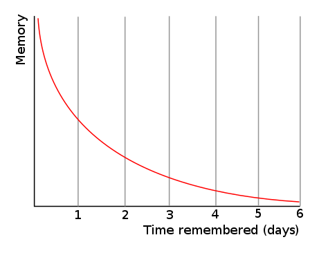
Figure 1: The original uploader was Icez at English Wikipedia.
6.3.2. A Mathematical Function
import Graphics.Gnuplot.Simple
:{
plotFunc [PNG "./images/expdecay.png"]
(linearScale 100 (1,6))
((\x -> exp (1.0/x)) :: Double -> Double)
:}
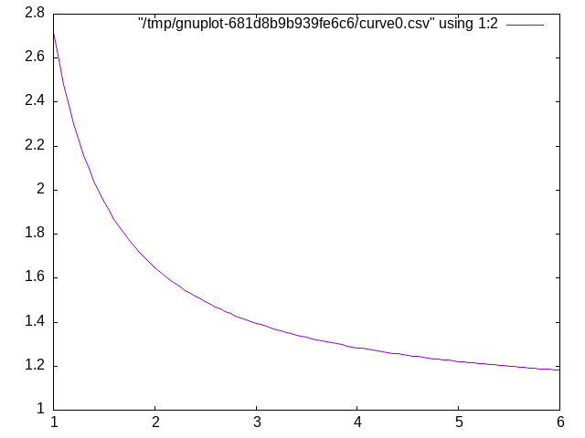
Figure 2: Plot of \(e^{\frac{1}{x}}\).
- A digression on code
The above example is coded in Haskell.
- What makes Haskell different from other programming languages?
- When might it be a good/bad choice?
- Do you need to learn to write code? Why or why not?
- Regardless of your answer, how do we get LLMs to support us? Or should we not use LLMs at all?
- Programming Exponential Decay exercise
Compute the numbers needed for a plot of exponential decay. Plot the exponential decay. Be prepared to come to the front and show us your code; your plot; and the tools you needed to get it to run. Groups of 2 or 3. Programming languages:
- Python
- R
- Javascript
- Same Exercise as Homework with one of these languages that I will assign. For this exercise you are supposed to use an LLM. See the Learn Dropbox for additional instructions.
- Racket (common lisp is okay too, but may be harder to install)
- Go
- Rust
- Lean4
- Typescript
- Ruby
- Ocaml
- APL (or any variant of APL you can get to work)
- Prolog
It is possible to fail at generating the code, and still get full credit. The purpose of this exercise is to learn about using LLMs to generate code: which one(s) should we use, how should we use them, what do we need to know to use them well, how do we know we can trust what they give us?
6.3.3. More on the fitting curves to Ebbinghaus Data
What can we infer from the similarity between Figure 1 and Figure 2 ?
What equations did Ebbinghaus fit to his own data? And what have other suggested?
You can find the answers here: Replication and Analysis of Ebbinghaus' Forgetting Curve.
Programming one of the alternatives and compare the plot to your exponential. See how close you can get.
What is the difference between a power function and an exponential function?
How might we reconcile the exponential and power function versions? An answer might be here.
Want to play with Ebbinghaus' original data? Load the HistData R package. Package description is here (pdf).
Once again, what is the difference between curve fitting and a mathematical (or computational) model?
6.4. Reprise
- What does COMPUTATIONAL cognitive neuroscience/science/psychology mean?
- Consider checking out Bain, What is Cognition?
- What are our first impressions of what research in the field looks like?
- What are our early impressions about the use of LLM for
- answering conceptual questions?
- coding implementations?
7. Neurally Inspired Models 1: The cellular level
What is the mathematical tool?
Differential Equations.
But first, let's understand the phenomena where we intend to use them.
Our Process:
- Before modeling, understand what we are trying to model. In this case, the action potential.
- Review prior work. Let's discuss what this means.
- How do we hope to benefit from using a computational model?
The above should drive our focus to particular mathematical tools. I will argue that we should be led to use differential equations here. You should be prepared to tell me why that is the right choice (or not; as long as you have principled arguments).
For this example we need to extend the process just described.
Understand what we are modeling and what we are using to model with.
- Simple electronics.
- Simple differential equations.
- Implement simple computational versions. Make a reference implementation. That is make it good, before you make it fast.
7.1. That which you cannot code, you do not understand.
My rephrasing of Richard Feynman's "I don't understand anything I can't build."
7.2. What is an action potential?
- Draw one.
- Explain what ions account for the different parts of the curve.
- Why is an action potential like a flush toilet?
- Why did/do people use the action potential to argue that brains are like digital computers?
- Who were McCulloch and Pitts and why are they relevant? A logical calculus
- Who developed the first detailed biophysical model of the action potential and what became of them?
- Why would we want to write a program to simulation a spiking neuron?
- Why might we want a simpler version?
- What math is important for modeling spiking neurons?
7.3. Notation
The mathematician's interest in being concise often means that simple ideas get translated to unfamiliar symbols. \ Just because the notation is unfamiliar does not mean the idea is complicated. What does \(\sum_{\forall x \in \left\{ 1 , 2 , 3 \right \}} x = 6\) mean?
Different mathematical and computational traditions have their own preferences, thus the same idea can have different notations. To a mathematician the \(\sqrt{-1} =\) i. To the engineer it is j.
\(\frac{dx}{dt}\) \(\dot{x}\) \(x{'}\) \(f{'}(x)\) are all different ways of talking about derivatives.
7.3.1. Notation Scavenger Hunt exercise
- Basic Numbers & Arithmetic
- What Number?
\[\lim_{x \to \infty} \left(1 + \frac{1}{x}\right)^x - \sum_{k=0}^{\infty} \frac{1}{k!}\]
- What Number?
\[\prod_{p \text{ prime}} \left(1 - \frac{1}{p^2}\right)^{-1} \cdot \frac{6}{\pi^2}\]
- What Number? Hint: Euler's Identity variant
\[-\exp(i\pi)\]
- What Number Hint: (Set Theory / Peano)
\[\vert{}\{\emptyset, \{\emptyset\}\}\vert{}\]
- What Simple Operation?
\[(x \oplus y) + 2(x \land y)\]
- What Number Are We Multiplying By?
\[\int_0^x 2 \, dt\]
- What Operation?
\[\arg\min_x \left( (x - a)^2 + (x - b)^2 \right)\]
- What Function?
\[\frac{d}{dx}\left(x + \sin^2(x) + \cos^2(x)\right) - 1\]
- We Know This Better As What?
\[\sqrt{x^2}\]
- What Are We Doing Here?
\[\sum_{i=1}^N \mathbb{I}(x_i > 0) \quad \text{where } \mathbb{I}(A) = \begin{cases} 1 & \text{if } A \text{ is true} \\ 0 & \text{otherwise} \end{cases}\]
- What Are We Doing Hint: Softmax
\[p_i = \frac{e^{z_i}}{\sum_{j=1}^K e^{z_j}}\]
- What Do We Normally Call This?
\[f(x) = \frac{1}{\sigma \sqrt{2\pi}} e^{-\frac{1}{2}\left(\frac{x - \mu}{\sigma}\right)^2}\]
- What Are We Doing To a And b?
\[\begin{bmatrix} a \\ b \end{bmatrix} \leftarrow \begin{bmatrix} 0 & 1 \\ 1 & 0 \end{bmatrix} \begin{bmatrix} a \\ b \end{bmatrix}\]
- Checking What Exactly?
\[x \pmod 2 \equiv 0\]
- 15. How Is This Like The Number 1? Hint: Matrices
\[\det(I_n) = 1^n\]
- What Number?
7.4. Differential Equations exercise
We want to discuss these questions. I will give you a few minutes. You can either work alone. Talk to a neighbor. Use an LLM (if you do, note which one and your prompts). To get us rolling try to come up with your best succinct answer to the first two questions. I will call on several of you, and we will vote on the best one.
- What is a slope of a line?
- What is the slope of a curve?
- What is a derivative?
- What is the definition of a derivative? \(\frac{dx}{dy} = \frac{f(x + \Delta x) - f(x)}{x+\Delta x - x}\)
- What is a differential equation (aka de)?
- Provide examples of phenomena in psychology or neuroscience (other than the action potential) that might be good candidates for this mathematical technique.
:{
plotFuncs [PNG "./images/derivExample.png"] (linearScale 1000 (-3 , 3 ) )
[(\x -> x ** 3) :: Double -> Double
, (\x -> 12 * x - 16) :: Double -> Double ]
:}
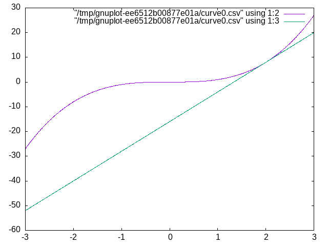
7.5. Using a DE
In computational neuroscience (or psychology) we don't typically " solve DEs. We use them. We use them to help us move forward in time to understand a process by virtue of what we know about its rate of change. We will see that in a couple of short examples, and then some simple scenarios for you to play with.
7.6. Using DEs to compute a cube root
1: module Sqrt where
2:
3: xcubed :: Double -> Double
4: xcubed = (** 3)
5:
6: diffXCubed :: Double -> Double
7: diffXCubed = ( 3 *) . ( ** 2)
8:
9: getStep :: Double -> Double -> Double
10: getStep guess goal = ( goal - xcubed guess) / diffXCubed guess
11:
12: getCubeRoot :: Double -> Double -> Double -> Double
13: getCubeRoot g i t =
14: let cg = i + getStep i g
15: myerr = abs (xcubed cg - g) in
16: if myerr > t then getCubeRoot g cg t else cg
Now let's test it:
:! pwd
:load "./src/Sqrt.hs"
getCubeRoot 27 1 0.001
getCubeRoot 8 1 0.001
getCubeRoot 141 1 0.001
/home/britt/gitRepos/compNeuroIntro420 [1 of 1] Compiling Sqrt ( src/Sqrt.hs, interpreted ) Ok, one module loaded. 3.0000005410641766 2.000004911675504 5.204827869200383
7.6.1. Your turn assignment
Working on your own on in any group \(\le\) 3 members produce code in any other language than Haskell to compute the fourth root (quartic). You are to implement the method I demonstrate to compute it, not simply to call a pre-built function that does it.
7.7. Using DEs - Practicing with Springs homework
Our Hodgkin-Huxley model will be will require us to use several different equations. And though the integrate and fire neuron only requires one, a neuron is still rather abstract as a computational entity. Therefore, we will begin our DE coding practice with a simple, idealized spring.
Our differential equation is \(\frac{d^2 position}{dt^2} = -P~position\).
where 'position' refers to the location in space of the unattached end of our spring (we assume one end is anchored to a wall or something), 't' refers to time, and 'P' is a constant, often called the spring constant, that indicates how springy the spring is.
If we knew where the spring was now, we could use this equation to tell us where it would be a little bit into the future; just as you can use your velocity on the highway to estimate your location in the future. The smaller the time step the more accurate will be our estimate. This simple Euler method often works quite well for smooth functions that don't change very much.
Unfortunately the spring equation is for the second derivative of location relative to time. This is called acceleration. Thus we need a two step process. From our current location and this equation estimate our velocity. From our present location and our velocity estimate our location. And repeat.
1: {-# LANGUAGE InstanceSigs #-}
2: module Spring where
3:
4: data SpringState = SpringState {
5: sDt :: !Double,
6: sAccFxn :: !(Double -> Double),
7: sVel :: !Double,
8: sLoc :: !Double
9: }
10:
11: instance Show SpringState where
12: show :: SpringState -> String
13: show s = "SpringState { t: " ++ show (sDt s) ++ "\
14: \, v: " ++ show (sVel s) ++ "\
15: \, loc: " ++ show (sLoc s) ++ " }"
16:
17:
18: {- Initial Values -}
19:
20: initV :: Double
21: initV = 0
22: initLoc :: Double
23: initLoc = 10
24: sprConst :: Double
25: sprConst = 2.0
26: timeStep :: Double
27: timeStep = 0.05
28: sprdt :: Double
29: sprdt = timeStep
30:
31:
32: {- Helper Functions -}
33:
34: accel :: Double -> Double -> Double
35: accel sc loc = (-sc) * loc
36:
37: accWithSC :: Double -> Double
38: accWithSC = accel sprConst -- called currying
39:
40: eulerUD :: Double -> Double -> Double -> Double
41: eulerUD ts roc oldval = oldval + roc * ts
42:
43: springLoop :: SpringState -> SpringState
44: springLoop ss =
45: let cA = sAccFxn ss (sLoc ss)
46: cV = eulerUD (sDt ss) cA (sVel ss)
47: cL = eulerUD (sDt ss) cV (sLoc ss)
48: in ss {sVel = cV, sLoc = cL}
49:
50:
51: releaseSpring :: Int -> [SpringState]
52: releaseSpring maxIter =
53: take maxIter (iterate springLoop
54: (SpringState timeStep
55: accWithSC initV
56: initLoc)) -- makes use of lazy evaluation
:load "./src/Spring.hs"
:{
plotList [PNG "./images/spring.png"]
$ map (\s -> sLoc s) $ releaseSpring 2000
:}
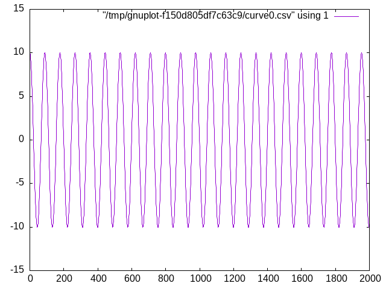
Figure 3: Frictionless Springs Oscillate
7.7.1. Try with a Damped Oscillator homework
The changes to whatever code you have for the frictionless spring should require very little alteration to work with the following DE:
\[ \frac{d^2 s}{dt^2} = -P~s(t) - k~v(t) \]
7.8. Solving DEs
There are many well established methods for solving systems of differential equations. If you really need one you can look it up. As a psychologist using a DE you will almost never have to solve, which means in this context to compute an analytical solution (analytical means using symbols). If you decide you must, just guess, and guess an exponential. Most of the differential equations we will see, and that you will see in biology or psychology, have the dependent variable present both on the left and right sides of your differential equation. The exponential is almost always in there somewhere as \(e^x\), since the derivative of \(\frac{d e^x}{dx} = e^x\).
Try this with the undamped oscillator. We know that the second derivative of how position changes with time will eventually be a function of current position so we guess that \(s(t) = e^{rt}\). Why the "r"? I know that the answer will have to be more than just \(e^x\) so I throw in "r" for now assuming I can figure out the details later. Now, we act on our guess. If
\begin{align} s(t) &= e^{rt} & \text{then}\\ \frac{d~s(t)}{dt} &= r~e^{rt} & \text{and thus}\\ \frac{d^2 s(t)}{dt} &= r^2 e^{rt} & \text{now plugging in our guess to our known formula we have }\\ r^2 e^{rt} &= -P~e^{rt} & \text{moving the right side to the left and factoring,} \\ e^{rt} ( r^2 + P) &= 0 & \text{we only need to worry about the right hand side so r must be,} \\ r &= \pm i \sqrt{P} & \text{ which means that are solution is,} \\ s(t) &= e^{it} + e^{-it} & \text{ and, thanks to Euler's}~~e^{i\Theta} = cos \Theta + i~sin \Theta \text{ and simplifying we have,} \\ s(t) &= 2 cos~t \end{align}7.9. Integrate and Fire Neuron
Is the integrate and fire model used much in modeling in the present time? answer
7.9.1. Historical Notes
- Louie La Pique
Modern Commentary on Lapique's Neuron Model
Figure 4: La Pique Laboratory at the Sorbonne Paris
Original Lapique Paper (translated) Brief Biographical Details of Lapicque
- Lord Adrian
- When was the action potential demonstrated?
- What was the experimental animal used by Adrian?
Adrian's Nobel Lecture Hodgkin's Memoir of Adrian Historical Recollections of a co-worker The Action Potential Celebrates Its 100th Birthday
7.9.2. Formula I and F
\(\tau \frac{dV(t)}{dt} = -V(t) + R~I(t)\)
Why is this the formula?
- Simple Electronics class_exercise
The following questions are the ones we need to answer to derive our integrate and fire model.
- What is Ohm's Law?
- What is Kirchoff's Point Rule?
- What is Capacitance?
- What is the relation between current and charge?
- Deriving the IandF Equation
\begin{align*} I &= I_R + I_C & (a) \\ &= I_R + C\frac{dV}{dt} & (b)\\ &= \frac{V}{R} + C\frac{dV}{dt} & (c)\\ RI &= V + RC\frac{dV}{dt} & (d) \\ \frac{1}{\tau} (RI-V) &= \frac{dV}{dt} & (e)\\ \end{align*}Can you tell why, looking at the integrate and fire equation, if we don't reach the firing threshold, we see an exponential decay?
Which of our principles, or rules, are we using at each step?
7.9.3. Coding up the Integrate and Fire Neuron
Approach this with the same ideas as the spring example. You have a certain initial value, and you update that using your differential equation that relates how much voltage changes as a function of time and current voltage.
Unlike real neurons the Integrate and Fire neuron model does not have a natural threshold and spiking behavior. You pick a threshold and everyone time your voltage reaches that threshold you designate a spike and reset the voltage.
Additional Activities (if that goes too quickly):
- Add a refractory period to the Integrate and Fire model.
- Alter the input current
- Change the form of the input current
1: {-# LANGUAGE GADTs #-}
2:
3: module IandF where
4:
5: dt,maxt,initt,starttime,stoptime,cap
6: ,res,threshold,spikedisplay,initv
7: ,voltage,injectioncurrent
8: ,iandftau :: Double
9: injectiontime,runningTime :: [Double]
10: dt = 0.05
11: maxt = 10.0
12: initt = 0.0
13: starttime = 1.0
14: stoptime = 6.0
15: cap = 1.0
16: res = 2.0
17: threshold = 3.0
18: spikedisplay = 8.0
19: initv = 0.0
20: voltage = initv
21: injectioncurrent = 4.3
22: injectiontime = [starttime, stoptime]
23: iandftau = res * cap
24: runningTime = [0.0]
25:
26: data IandFStrut where
27: IandFStrut :: {
28: time :: [Double],
29: spikestatus :: Bool,
30: currents :: [Double],
31: voltages :: [Double]
32: } -> IandFStrut
33: deriving Show
34:
35: instance Semigroup IandFStrut where
36: (IandFStrut t1 _ c1 v1) <> (IandFStrut t2 s2 c2 v2) =
37: IandFStrut (t1 ++ t2) s2 (c1 ++ c2) (v1 ++ v2)
38:
39: initialStrut :: IandFStrut
40: initialStrut = makeStep 0 False 0.0 initv
41:
42: update :: Double -> Double -> Double -> Double
43: update ov roc ts = roc * ts + ov
44:
45: dvdt :: Double -> Double -> Double -> Double
46: dvdt lres li lv =
47: (1 / iandftau) * ( lres * li - lv )
48:
49: between :: Double -> Double
50: between ct = case injectiontime of
51: [myfirst,mylast] ->
52: if ct >= myfirst && ct <= mylast
53: then injectioncurrent
54: else 0.0
55: badList -> error "Error: Expected list of two doubles"
56:
57: vchoice :: (Double, Bool, Double, Double) -> Double
58: vchoice (cv,ss,thr,sd)
59: | ss = 0.0
60: | cv > thr && not ss = sd
61: | otherwise = cv
62:
63: makeStep :: Double -> Bool -> Double -> Double -> IandFStrut
64: makeStep t s c v = IandFStrut [t] s [c] [v]
65:
66: oneRunIandF :: IandFStrut -> IandFStrut
67: oneRunIandF inStrut =
68: let ct = last (time inStrut)
69: cv = last (voltages inStrut)
70: ci = between ct
71: nv = vchoice (update cv (dvdt res ci cv) dt
72: , spikestatus inStrut
73: , threshold, spikedisplay)
74: nextstep = makeStep (ct + dt)
75: (abs (nv - spikedisplay) < threshold)
76: ci
77: nv
78: in (inStrut <> nextstep)
:load ./src/IandF.hs
import Graphics.Gnuplot.Simple
:{
let run200 = iterate oneRunIandF initialStrut !! 200
vs = voltages run200
cs = currents run200
ts = time run200
tv = zip ts vs
tc = zip ts cs
:}
plotPaths [PNG "./images/iandf.png"] [tv,tc]
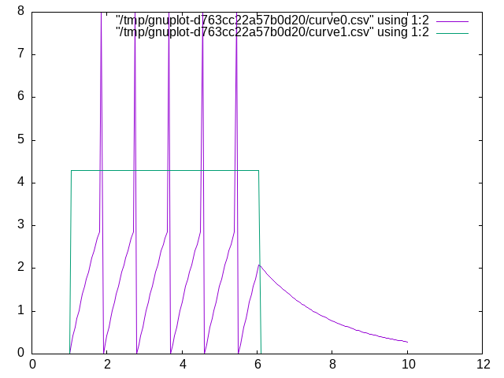
7.9.4. Integrate and Fire Homework
The Integrate and Fire homework has two components. One practical and one theoretical.
Practically, submit an integrate and fire program. Do something to show that you had something to do with the coding and you understand what is happening.
7.9.5. Last Thoughts
Theoretically, look at this article (pdf) and tell me how you feel our integrate and fire model compares to these actual real world spiking data when both are give constant input. What are the implications for using the integrate and fire model as a model of neuronal function?
7.10. Hodgkin and Huxley Model
7.10.1. Who were Hodgkin and Huxley
7.10.2. Biographical Sources
Nobel Prize biographies: Hodgkin Huxley
Nice summary article (pdf)
7.10.3. Methodology
Video of the method
7.10.4. Model Description
Gerstner's (free) book's chapter on the HandH model.
- Comments and Steps in Coding the Hodgkin Huxley Model
Some introductory reminders and admonitions:
The current going in to the cell is intended to represent what an electrophysiologist would inject in their laboratory setting, or what might be changed by the input from other neurons. The total current coming out of the neuron is the sum of the capacitance (due to the lipid bilayer), and the resistance (due to the ion channels). This is Kirchoff's rule implemented in the Hodgkin and Huxley model.
Unlike the Integrate and Fire model, which lumps all the ionic currents together, the HandH model decomposes the conductance into three parts. You have a resistance for each ion channel. The rule for currents in parallel is to apply Kirchoff's and Ohm's laws realizing that they all experience the same voltage, thus the currents sum. The Hodgkin and Huxley model has components for Sodium (Na), Potassium (K), and negative anions (still lumped as "leak" l).
\(\sum_i I_R(t) = \bar{g}_{Na} m^3 h (V(t) - E_{Na}) + \bar{g}_{K} n^4 (V(t) - E_{K}) + \bar{g}_{L} (V(t) - E_{L})\)
\(I_{tot} = I_r + I_C\)
\(I_{tot} = \bar{g}_{Na} m^3 h (V(t) - E_{Na}) + \bar{g}_{K} n^4 (V(t) - E_{K}) + \bar{g}_{L} (V(t) - E_{L}) + c~\frac{dV}{dt}\)
If you rearrange terms you can get the \(\frac{dV}{dt}\) on one side of the equation by itself.
\(c~\frac{dV}{dt} = I_{tot} - (\bar{g}_{Na} m^3 h (V(t) - E_{Na}) + \bar{g}_{K} n^4 (V(t) - E_{K}) + \bar{g}_{L} (V(t) - E_{L}))\)
You cannot program what you don't understand. Don't start writing code too soon. Writing code won't make a poorly understood idea clearer. Though it can reveal that you don't understand what you thought you understood. It is often best to start sketching ideas on paper or a blackboard before you open up your IDE.
For instance,
- What are the \(\bar{g}_*\) terms?
- What are the \(E_{*}\) terms?
- What do m, n, and h represent?
- Where did these equations come from?
Remember, it is differential equations all the way down. You can use the same Euler method to patiently update each of your terms and then repeatedly loop between them. But recognize there are DEs at multiple levels. Each of the m, n, and h terms are also changing and regulated by a differential equation. They are dependent on voltage, too. For example, \(\dot{m} = \alpha_m (V)(1 - m) - \beta_m (V) m\).
Recognize that
- Each of the m, n, and h terms have their own equation of exactly the same form, but with their unique alphas and betas (that is what the subscript means).
- What does the V in parentheses mean?
- When the proteins of the ion channels were finally sequenced (decades later), what do you think was the number of sub-units that the sodium and potassium channels were found to have?
Initial Assumptions
If you allow \(t \rightarrow \infty \mbox{, then } \frac{dV}{dt}=?\)
- You assume that it goes to zero; that is, you reach steady state. Then you can solve for some of the constants.
- Where do the constants come from?
- They come from experiments, and you use what you are given.
- Assume the following constants - they are set to assume a resting potential of zero not -70 mV (why doesn't this matter)?
- These constants also work out to enforce a capacitance of 1.
The "infinity" or "long time resting state" of the \(m\), \(n\), and \(h\) values (that I refer to as \(m_{inf}\) in my code and these notes) is of the form \((m/n/h)_{inf}= alpha(m/n/h)(v) / (alpha(m/n/h)(v) + beta(m/n/h)(v))\)
- Constants
Several different sets of constants are used for this model in published versions. They are all, in one sense, the same, but this set make the programming easier. For the moment, ignore the units and use these numbers.
Table 1: Constant Values to Use for our Hodgkin-Huxley Model Constant Value ena 115 gna 120 ek -12 gk 36 el 10.6 gl 0.3 Warning These constants are adjusted to make the resting potential 0 and the capacitance 1.0.
- Alpha and Beta Formulas
\[ \alpha_n(V_m) = \frac{0.01 (10 - V_m)}{\exp\left( \frac{10 - V_m}{10} \right) - 1} \]
\[ \alpha_m(V_m) = \frac{0.1(25 - V_m)}{\exp\left( \frac{25 - V_m}{10} \right) - 1} \]
\[ \alpha_h(V_m) = 0.07 \exp\left( \frac{-V_m}{20} \right) \]
\[ \beta_n(V_m) = 0.125 \exp\left( \frac{-V_m}{80} \right) \]
\[ \beta_m(V_m) = 4 \exp\left( \frac{-V_m}{18} \right) \]
\[ \beta_h(V_m) = \frac{1}{\exp\left( \frac{30 - V_m}{10} \right) + 1} \]
- Demonstrating the Hodgkin-Huxley Model
1: {-# LANGUAGE GADTs #-} 2: 3: module HandH where 4: import Data.Maybe (fromMaybe) 5: 6: data SimParameters where 7: SimParameters :: { 8: hhdt :: Float, 9: maxT :: Float, 10: initT :: Float, 11: startTime :: Float, 12: stopTime :: Float, 13: capacitance :: Float, 14: resistance :: Float, 15: initialVoltage :: Float, 16: injectionCurrent :: Float, 17: hhtau :: Float 18: } -> SimParameters 19: deriving Show 20: 21: data NeuronState where 22: NeuronState :: { 23: vns :: Float 24: , ic :: Float 25: , neuTime :: Float 26: , mns :: Maybe Float 27: , nns :: Maybe Float 28: , hns :: Maybe Float 29: } -> NeuronState 30: deriving Show 31: 32: data NeuronParams where 33: NeuronParams :: { 34: ena :: Float, 35: gna :: Float, 36: ek :: Float, 37: gk :: Float, 38: el :: Float, 39: gl :: Float 40: } -> NeuronParams 41: deriving Show 42: 43: data NeuronDynamics where 44: NeuronDynamics :: { 45: alphaN :: Float -> Float, 46: alphaM :: Float -> Float, 47: alphaH :: Float -> Float, 48: betaN :: Float -> Float, 49: betaM :: Float -> Float, 50: betaH :: Float -> Float, 51: mdot :: Float -> Float -> Float, 52: ndot :: Float -> Float -> Float, 53: hdot :: Float -> Float -> Float, 54: minf :: Float -> Float, 55: ninf :: Float -> Float, 56: hinf :: Float -> Float 57: } -> NeuronDynamics 58: 59: data Neuron where 60: Neuron :: {parameters :: NeuronParams, 61: equations :: NeuronDynamics 62: } -> Neuron 63: 64: dotDynamics :: Float -> Float -> 65: (Float -> Float) -> 66: (Float -> Float) -> 67: Float 68: dotDynamics volt chan alphaf betaf = 69: alphaf volt * (1 - chan) - betaf volt * chan 70: 71: dotInfinity :: Float -> 72: (Float -> Float) -> 73: (Float -> Float) -> 74: Float 75: dotInfinity v alphaf betaf = alphaf v / (alphaf v + betaf v) 76: 77: pSet1 :: SimParameters 78: pSet1 = SimParameters 0.05 300.0 0.0 100.0 79: 150.0 1.0 2.0 0.0 20.0 80: (resistance pSet1 * capacitance pSet1) 81: 82: pSet2 :: SimParameters 83: pSet2 = SimParameters 0.05 300.0 0.0 10.0 84: 50.0 1.0 2.0 0.0 0.0 85: (resistance pSet2 * capacitance pSet2) 86: 87: healthyParams :: NeuronParams 88: healthyParams = NeuronParams 115 120 (-12) 36 10.6 0.3 89: 90: healthyDynamics :: NeuronDynamics 91: healthyDynamics = NeuronDynamics { 92: alphaN = \v -> (0.1-0.01*v)/(exp(1-0.1*v) - 1), 93: alphaM = \v -> (2.5-0.1*v)/(exp(2.5-0.1*v) - 1), 94: alphaH = \v -> 0.07*exp((-v)/20), 95: betaN = \v -> 0.125 * exp((-v)/80), 96: betaM = \v -> 4*exp((-v)/18), 97: betaH = \v -> 1/(exp(3-0.1*v)+1), 98: mdot = \v c -> dotDynamics v c (alphaM healthyDynamics) 99: (betaM healthyDynamics), 100: ndot = \v c -> dotDynamics v c (alphaN healthyDynamics) 101: (betaN healthyDynamics), 102: hdot = \v c -> dotDynamics v c (alphaH healthyDynamics) 103: (betaH healthyDynamics), 104: minf = \v -> dotInfinity v (alphaM healthyDynamics) 105: (betaM healthyDynamics), 106: ninf = \v -> dotInfinity v (alphaN healthyDynamics) 107: (betaN healthyDynamics), 108: hinf = \v -> dotInfinity v (alphaH healthyDynamics) 109: (betaH healthyDynamics) 110: } 111: 112: healthyNeuron :: Neuron 113: healthyNeuron = Neuron healthyParams healthyDynamics 114: 115: hhInitialState :: NeuronState 116: hhInitialState = NeuronState (initialVoltage pSet1) 117: (injectionCurrent pSet1) 118: (initT pSet1) Nothing Nothing Nothing 119: 120: updNeuron :: Neuron -> SimParameters -> NeuronState -> NeuronState 121: updNeuron neuin spin nsin = 122: let eqneuin = equations neuin 123: voltagein = vns nsin 124: nparamsin = parameters neuin 125: outi = ic nsin 126: mnew = fromMaybe 0.0 127: (case mns nsin of 128: Nothing -> Just $ minf eqneuin voltagein 129: Just x -> Just $ x + 130: mdot eqneuin voltagein x * hhdt spin) 131: nnew = fromMaybe 0.0 132: (case nns nsin of 133: Nothing -> Just $ ninf eqneuin voltagein 134: Just x -> Just $ x + 135: ndot eqneuin voltagein x * hhdt spin ) 136: hnew = fromMaybe 0.0 137: (case hns nsin of 138: Nothing -> Just $ hinf eqneuin voltagein 139: Just x -> Just $ x + 140: hdot eqneuin voltagein x * hhdt spin) 141: dvdt = outi - 142: (gna nparamsin * mnew ^ 3 * hnew * 143: (voltagein - ena nparamsin) + 144: gk nparamsin * nnew ^ 4 * 145: (voltagein - ek nparamsin) + 146: gl nparamsin * 147: (voltagein - el nparamsin)) 148: in 149: nsin {vns = voltagein + dvdt * hhdt spin 150: , ic = if (neuTime nsin < stopTime spin) && 151: (neuTime nsin > startTime spin) 152: then injectionCurrent spin 153: else 0.0 154: , neuTime = neuTime nsin + hhdt spin 155: , mns = Just mnew 156: , nns = Just nnew 157: , hns = Just hnew 158: }:load ./src/HandH.hs import Graphics.Gnuplot.Simple :{ let myData = take 5000 $ iterate (updNeuron healthyNeuron pSet1 ) hhInitialState vs = map vns myData cs = map ic myData ts = map neuTime myData tv = zip ts vs tc = zip ts cs :} plotPaths [PNG "./images/handh.png"] [tv,tc]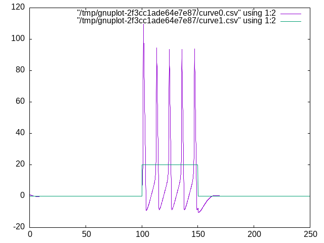
- More hints on programming the Hodgkin-Huxley model.
- Work inside out By this I mean that you start with small functions that you know you will need and only later build out to chaining them altogether. It is easier to test individual functions.
- Keep it working This means you test your code changes frequently and often. You don't want to miss a typo that breaks your code after two hours of all sorts of other changes.
- Use the terminal The way to test is to write your code so that you can source it (or import it) as you work and test your code in your interpreter. This is a lite-version of what is called a REPL: read-eval-print-loop.
- Use git (or something) By committing often you can more easily jump back to a working version if you break things horribly.
- Test with numbers where you know the answer. If you inject no current your voltage should not change. Because of small numerical imprecisions there may be some small non-zero numbers, especially early in your run, but you should definitely not drift off to larger positive or negative numbers.
- Code in a way that makes it easy to visualize variables We are often better at seeing what is going on when we look at a plot rather than a long list of numbers. By writing in a style that allows you to plot your variables you may be better able to debug errors.
- Expect that you will misplace a decimal. That is, don't get too discouraged. We all do this. At this stage I encourage you not to use a large language model to help you figure out the logic of your code, but if you think you have nailed the logic and just have a small typo or syntactic error somewhere, then by all means let the eagle eye of the chat bot help you find it. The more specific you are with your prompt, the better will the chat bot be able to educate. Don't say: "Why doesn't this work?". Do say: "I think there is a bug somewhere in the xyz function. Do you see a typo or similar bug in there?"
- Hodgkin and Huxley Homework
Your homework will require you to write the code for a Hodgkin-Huxley Neuron and then modify it. You will provide at least two plots in addition to your code. You will need to adapt the model to fit this paper.1 These authors analyzed a series of inherited channelopathies (where ion channels are altered due to mutation) via simulation. In these conditions empirical measurements had been made on actual patients. The authors adapted the Hodgkin and Huxley model to permit them to explore the effects of such altered conductance on neuronal excitability. For this home work you will need to adapt the n equation to be as follows:
\(\frac{dn}{dt} = \gamma_\tau (\gamma_\alpha \alpha_n (v - \Delta V)(1 - n) - \gamma_\beta \beta_n (v- \Delta V)n)\)
Then you must select one of the sets of γ from their Table 1 and plot the neuronal activity.
To start with after you have implemented the new n channel function set all the γ s to 1. This should work exactly like the old model. Generate a plot showing that it does. For the second plot generate the same plot with your altered \(\gamma\) values.
8. What is computation and what is its role in cognitive science?
We will be having a discussion on this. It only works if you have read some preparatory material. To that end there are groups of four created with each person reading one of the assignments. We will spend class time for the groups to share with each other the material they read. The readings come the Stanford Encyclopedia of Philosophy. This is a great, free, on-line resource. We will be reading parts of the entry on the The Computational Theory of Mind. The sections to read are all of section 3, 4.4, and all of 5 and 7. Feel free to read more, but at least read the one that you are supposed to read for your group. Reading technical material for comprehension is something that requires practice.
Questions that will follow your group conferences are along the following lines:
8.1. What do you think?
- Computational modeling of cognition and neural systems is/is-not the same as computer programming?
- What else could computational modeling be?
- What are we losing when we treat our computational model as a programmatic black box?
- Is the computation that is cognitive the same as the computation that takes place in digital computers?
- If so, why is there more than one programming language?
- Should our choice of programming language be based on features actually influence what we can conceive for a computational model?
- What does it mean for something to be a model?
- Is simulation good enough?
- Is prediction good enough?
- Do we want a model to explain something? And then of course what constitutes explanation?
8.2. What do we need to know and what should we think about when considering questions like this? To span the levels from mind to brain via theory, math, and code2
One of the ways to test your comprehension of a technical reading is to see if you can use it to reason about some related ideas. Understanding is more that simply remembering what was written. That is why many of the questions above are on programming implications. Can we apply our knowledge to new, but related, content? To do this,
- We need to know the facts of the matter, neurally and cognitively.
- We need to have a clear question.
- We need to have a theoretical commitment that leads to clear predictions, and guides our evaluation of what to do.
- Which of course means we need to know what a theory is and how to build one.
- We need to know the facts of the matter mathematically and programmatically
- We need to be able to read the maths.
- We need to be conversant in symbols and notations.
- We need to know how to express in symbols what we can say in words.
- We need to know how to express in code what we can write in symbols.
8.3. Computing in Minds and Computers
One definition of whether something is computable is whether there exists a Turing Machine that can compute it. Although most of us learned the name "Turing" in the context of whether a computer has human intelligence, the so-called Turing test, the model of Turing computability emerged from thinking about humans computing3
8.4. What is a Turing machine? Some Background and Details
Turing machines are quite simple implements. While one can build a physical Turing machine, the more usual sense of the term is for a hypothetical computer that is comprised of:
- a finite alphabet,
- a finite set of states,
- the capacity to read and write to a single location in memory, and the ability to adjust the memory location immediately left or right or to make no move at all, and
- a set of instructions (or "machine table") that translates the combination of the current state and the current symbol to a new state and one of the acceptable actions.
8.4.1. Classroom Activity
Let's develop pseudo-code for the implementing a Turing Machine. It may help you when you do have to program a Turing machine.
8.5. Programming a Turing Machine: the Busy Beaver
In my experience the only way to really come to grips with what a Turing machine is is to program one yourself. For this exercise we will program a Turing machine to solve an elementary version of the Busy Beaver problem. This is a famous problem, because it is easy to state and woefully difficulty to answer. In fact it is incomputable.
The following is a slightly formatted version of the Wikipedia description of a Turing machine.
- A Turing machine has n "operational" states plus a Halt state, where n is a positive integer, and one of the n states is distinguished as the starting state.
- The machine uses a single two-way infinite (or unbounded) tape.
- The tape alphabet is {0, 1}, with 0 serving as the blank symbol.
- The machine's transition function takes two inputs:
- the current non-Halt state,
- the symbol in the current tape cell,
- and produces three outputs:
- a symbol to write over the symbol in the current tape cell (it may be the same symbol as the symbol overwritten),
- a direction to move (left or right; that is, shift to the tape cell one place to the left or right of the current cell), and
- a state to transition into (which may be the Halt state).
We will use it to guide us to write a simple instance that computes a solution to the Busy Beaver problem. A n-state Turing machine has $(4n + 4)2n$states. The formula is (symbols × directions × (states + 1))(symbols × states). The transition function (how to figure out where to go next may be seen as a finite look-up table. Each row of the table is a 5-tuple: (current state, current symbol, symbol to write, direction of shift, next state). Our goal with the Busy Beaver problem is to run our machine to produce as long a series of uninterrupted ones as we can and then halt.
What it means to "run" a Turing machine is to start in the starting state with the current tape cell being any cell of a blank (all-0) "tape", and then iterate the transition function. If the Halt state is entered then the number of 1s remaining on the tape is called the machine's score. Different transition rules will give us different outputs, so we can score our machine based on its performance.
To restate in a more general way, the n-state busy beaver (BB-n) game is a contest to find an n-state Turing machine having the largest possible score — the largest number of 1s on its tape after halting. A machine that attains the largest possible score among all n-state Turing machines is called an n-state busy beaver, and a machine whose score is merely the highest so far attained (perhaps not the largest possible) is called a champion n-state machine.
8.5.1. A Busy Beaver Warm-Up
A simple version of the Busy Beaver problem, and one you can do by hand with pencil and paper, is the n=2 version. Create a Turing Machine with the following transition rules:
Here is the transition table for our machine:
| Machine Tuple In | Machine Tuple Out |
|---|---|
| a0 | b1r |
| a1 | b1l |
| b0 | a1l |
| b1 | h1r |
8.5.2. Busy Beaver Problem Demo Code
1: module BusyBeaver where
2:
3: import Data.Set (Set,fromList)
4: import qualified Data.Map.Lazy as Map
5: import Data.Map.Lazy (Map)
6:
7: type TMState = Char
8: type Position = Int
9: data BinNum = Zero | One deriving (Show, Eq, Ord, Enum)
10: type TMTape = Map Int BinNum
11:
12: data TuringMachine = TM
13: { state :: TMState
14: , tape :: TMTape
15: , headLoc :: Int} deriving Show
16:
17: testStates :: Set TMState
18: testStates = fromList ['a','b','h']
19:
20: initialTape :: Map Int BinNum
21: initialTape = Map.empty
22:
23: defaultTapeCell :: BinNum
24: defaultTapeCell = Zero
25:
26: initialState :: TMState
27: initialState = 'a'
28:
29: initialTM :: TuringMachine
30: initialTM = TM initialState initialTape 0
31:
32: readFromTape :: TMTape -> Int -> BinNum
33: readFromTape t i =
34: Map.findWithDefault Zero i t
35:
36: writeToTape :: BinNum -> Int -> TMTape -> TMTape
37: writeToTape bn hl = Map.insert hl bn
38:
39:
40: updTM :: TuringMachine -> TuringMachine
41: updTM tm@(TM st t hl) =
42: let bn = readFromTape t hl in
43: case st of
44: 'a' -> case bn of
45: Zero -> tm {state = 'b'
46: , tape = writeToTape One hl t
47: , headLoc = hl + 1}
48: One -> tm {state = 'b'
49: , tape = writeToTape One hl t
50: , headLoc = hl - 1}
51: 'b' -> case bn of
52: Zero -> tm {state = 'a'
53: , tape = writeToTape One hl t
54: , headLoc = hl - 1}
55: One -> tm {state = 'h'
56: , tape = writeToTape One hl t
57: , headLoc = hl }
58: 'h' -> tm
59: _ -> error "Entered incorrect state variable"
tape $ iterate updTM initialTM !! 7
fromList [(-2,One),(-1,One),(0,One),(1,One)]
8.6. The Lambda Calculus
8.6.1. How did we get here?
Computational approaches to neuroscience and psychology have both large and small questions. Both can be hard. Coding the Hodgkin Huxley model is challenging, but the difficulty is in the details. What is the right formalism to modeling cognition is a philosophical question and a scientific question.
After having worked our way through some of the debate on the meaning of terms like "cognition" we have come to "computation." Turing machines are probably the most common framework used for asserting that cognition is computation. They are relatively easy to describe and implement for simple cases. That is why debates around classical computational theories of mind usually are framed by the slogan, "the mind is a Turing machine."
But there are other models of computation, and considering them may help us appreciate different aspects of the debate, or find a more convenient metaphor for considering certain aspects of cognition. The lambda calculus says that instead of state machines (the TM account) we should view computation through the lens of functions, and that includes the important notion of compositionality. Although these two constructions appear quite different on the surface, it has been shown that any thing that can be computed in one can be computed by the other. They are equivalent.
8.6.2. Why should a psychology student care?
Because if we accept that the mind is a Turing Machine, then it is also true what the mind compute can be formalized by the lambda calculus. As we will see shortly, there is another computational language of combinatory logic. Any expression in the lambda calculus has a formalization it terms of combinators. So, now we can select a formalization of computation that suits our questions. Why might one choose combinators? It has been argued that they are close to the notions of compilation that comes up in programming languages when we want to make our statements in the language become something executable by the machine. Our choice of a Turing Machine drives us in the direction of state and sequential actions:rules if you will, and that has been a long running theme in cognitive science. The lambda calculus leads us to a functionalist perspective where we think about the pairing of inputs and outputs, but to express a lambda is to give a method. Maybe that is what we want to think about?
Two notions of functions: rules or pairings. Which of these most aligns with the TM and lambda calculus approaches? Which of these is more like behaviorism? Which of these do you find the better framework? As a bonus, which of these is extensional and which is intensional?
8.6.3. How Does It All Relate to Marr? classroom_discussion
- What, again, are Marr's levels?
- What level should we be thinking about when we think of the computational theory of mind?
- What level is the lambda calculus at?
8.6.4. What Are We Committing To When We Say "Cognition is Computation"? classroom_discussion
8.6.5. Lambda Notation Basics
The lambda calculus is built entirely from functions.
- Syntax
\x.xmeans "a function that takes input x and returns x" (the identity function) Where have you seen this notation before? How might we right this in python? Note that the function is anonymous. What is currying? And how does it relate to the lambda calculus?accel :: Double -> Double -> Double accel sc loc = (-sc) * loc accWithSC :: Double -> Double accWithSC = accel sprConst -- called currying(lambda x : x) (5)\x.ymeans "a function that takes input x and returns y" (a constant function) What will(lambda x : 3)(5)return. What if we give it a different input?- Application:
(\x.x) 5means "apply the identity function to 5", which gives us5
- Test yourself
8.6.6. Same, but Different: Combinators
- History
Actually invented before the lambda calculus, twice in fact. Once by Schönfinkel and once by Curry.
Turing machines have taken the limelight as models of computation—with combinators, hard to understand as they are, being mentioned at most only in obscure footnotes. – Wolfram
In other words, his [Schönfinkel's] goal is to create a general framework for operating on arbitrary symbolic expressions independent of their interpretation. – Wolfram
- Short Summary
A combinator combines other functions or values without using variables.
- The Basic Combinators
- I - Identity
I = \x.xTakes its input and returns it unchanged.- K - Constant (Kestrel 4)
K = \x.\y.xTakes two inputs and returns the first, ignoring the second. Example:K a b → aThink of this as "pick the first argument."- S - Substitution (Starling)
S = \x.\y.\z.(x z)(y z)This one is trickier. It takes three inputs and applies the first to the third, then applies the second to the third, then applies those results to each other. QuestionSKKis equal to another of the combinators. Which is it?5
- A Non-Terminating Example
Here's something interesting:
(\x.x x)(\x.x x). Compare to 3 Try to evaluate it:(\x.x x)(\x.x x)- Applying the left function to the right:
(\x.x x)(\x.x x) - We're back where we started!
This is an infinite loop, but we got it using only function application. No
whileloops, no recursion keyword - just functions.This is why in computer science the lambda calculus is often more useful than the Turing Machine construction.
Why might this be psychologically instructive? Can you think of any psychological or cognitive processes that might map on to this? Rumination? Sustained attention? Flow?
My intention is not to claim that combinatory logic is the solution to mental representation—it would be pretty lucky if logicians of the early 19th century happened to hit on the right theory of how a biological system works. Rather, I see combinatory logic as a metaphor with some of the right properties. I will refer to the more general form of the theory as like Combinatory-Logic, or LCL, and describe some of its core components.6 – Piantadosi7
- The Basic Combinators
- Write a python or R implementation of each of I, K, and S. Try running this code. Verify that… classroom_activity
I(5)returns5K(3)(7)returns3S(K)(K)(5)returns5(it acts like the identity function)
8.6.7. The Church-Turing Thesis
The two combinators (K, S) are sufficient to compute anything that your Turing machine can compute (but first, why don't I need to include I in this list?).
You can build:
- Numbers
- Arithmetic operations
- Conditional logic
- Recursion
- All computable functions
How would you use these things to make numbers?
8.6.8. Church Numerals
Church numerals show how numbers emerge from pure function structure—nothing but lambdas.
8.6.9. Computing with the Lambda Calculus
8.6.10. Logic with Combinators classroom_exercise
Using the combinators we have, come up with a combinator definition for TRUE and FALSE. The idea here is to see TRUE and FALSE as functions and not as values.
true = \ t -> \ f -> t
true_c = k
false = \t -> \f -> f
false_c = k $ i
How would you write NOT? First, you have to keep in mind that you are writing a function. What type of value does it start with, and what type of value does it end with?
not = \ b -> b false true
putStrLn $ "not true is " <> not true "yes" "no"
putStrLn $ "not false is " <> not false "yes" "no"
- Bonus Exercise classroom_exercise
It is possible to translate all the boolean functions into a combinator equivalent, but I found this tricky and confusing, so I assumed most of you would too. Since it is the "meta" level idea of alternative framings that I most want to emphasize, I didn't feel push the parallel too far with specifics would be helpful, but if you want to try, be my guest. Here is a warm up problem.
Let's define a new combinator
b(as in Bluebird) for function composition. This means if we have two functionsfandgthencomposition f g x = f ( g (x)). So, you want to writeb f g xand show that it reduces tof (g (x)). I will tell you thatb = S ( K S) Kyou need to apply the combinators step by step to prove thatb f g x = S ( K S ) K f g x = f ( g (x)). You should note that since the combinators associate to the left this is the same as ((((S ( K S ) K) f) g) x) - Boolean Functions classroom_exercise
Write the AND and OR functions for our functional definitions of true and false.
myAnd = \ b1 -> \ b2 -> b1 b2 false myOr = \ b1 -> \ b2 -> b1 true b2 putStrLn ("And t t is " <> myAnd true true "yes" "no") putStrLn ("And f t is " <> myAnd false true "yes" "no") putStrLn ("Or t t is " <> myOr true true "yes" "no") putStrLn ("Or f f is " <> myOr false false "yes" "no") - Compare the truth-table, and lambda accounts to a simple threshold neuron. How does that map on to Marr?
All three agree at Marr's computational level: same input-output mapping. They differ at the algorithmic level.
Property Truth table Threshold unit Lambda term Truth is… a stored 0/1 an activation level a choice (a function) One unit/term computes XOR? yes (lookup) no (not separable) yes: p (NOT q) qParameters adjustable by gradient no yes (delta rule) no Small change to the description one cell small change in weights a different program - Why this is psychology and not a puzzle
Boolean concepts are a standard stimulus class in category learning. Shepard, Hovland and Jenkins8 studied six types of classification over three binary features. Feldman9 argued that difficulty tracks minimal Boolean formula length, which is a program-length account of the same data. Nosofsky10 replicated and extended the SHJ study. The Part C experiment is a toy version of Feldman-style complexity: ask how deep the shortest program for a concept is, then ask whether that predicts which concepts people find hard. Piantadosi, Tenenbaum and Goodman11 push this into a full compositional model of Boolean concept learning.
The LCL can be thought of as a new metaphor—a sub-meaningful symbolic-dynamical system- that gives rise straightforwardly to the types of structures, representations, and algorithms that permeate cognitive science, and that is implementable directly in neural architectures. In spanning these levels, it avoids dodging questions about meaning – Piantadosi
- Lambda v. Turing
We discussed some objections to the classical computational theory of mind. Do the same objections apply to the lambda calculus as to the Turing machine.
Turing Machine Lambda Calculus Tape, head, states Functions only Symbols and movement Application and substitution Physical/mechanical intuition Abstract/mathematical Same computational power Same computational power This equivalence is one of the deepest results in computer science. It suggests that "computation" is a fundamental concept that transcends any particular implementation.
- Implications
If anything that is computable can be computed by one of these systems,
and if thinking is computation,
then you can think with a Turing machine, and since Turing Machines can be built from non-biological parts then thinking is not just for people anymore.
- Lambda v. Turing
8.6.11. Lambda Calculus Homework
- HW 1: Computational Analogy Essay
Choose one psychological process from the list below (or propose your own with instructor approval):
- Memory retrieval
- Selective attention
- Emotional regulation
- Decision-making under uncertainty
- Language comprehension
- Habit formation
- Cognitive dissonance resolution
Write an essay exploring this question: How you might it help you to model your chosen psychological process if you thought in terms of the lambda calculus or combinators as your modeling primitives?
- HW 2:Build a Mental Operation
Choose one simple cognitive or logical operation from this list:
- If-then (conditional application)
- Comparison (determining which of two items is greater/better/preferred)
- Recall cue (using one item to retrieve an associated item)
- Either, but not both (you have a dollar; you can buy a candy bar or a soda, but not both)
Attempt to express this operation using lambda calculus or SKI combinators.
For recall you will need a notion of pairs. Can you build a structure that holds two items and releases one when prompted?
To make you feel better
The founders of computer science—Church, Turing, Curry—struggled with these ideas for years. You are being asked to engage with material that shaped the twentieth century's understanding of mind and mechanism. Confusion is not failure. Frustration is not failure. Only disengagement is failure.
9. Neurally Inspired Models 2: The network effect
9.1. Neural Networks
- What is a neural network?
- What mathematics are needed to build a neural network?
- How can neural networks help us understand cognition?
9.1.1. Cellular Automata
- Drawing Exercise
- Pick a number between 0 and 255 inclusive. Tell it to me when I ask.
Compute your rule. You write the configurations on top, and you write the base two representation of your number below. Like this for rule number 110.
111 110 101 100 011 010 001 000 0 1 1 0 1 1 1 0 - Using your rule and your piece of graph paper start implementing your rule after coloring a single square in the middle of the top row "black" (equals 1).
- Drop down one row and working from left to right color in the squares based on the three squares in the row above them.
The idea is something like this:
Figure 5: An illustration of which three squares in the row above influence the coloring of your grid.
- Do this for several rows.
- Results
:load ./src/Automata.hs drawAutomata 30 128 5 "./images/rule30.png"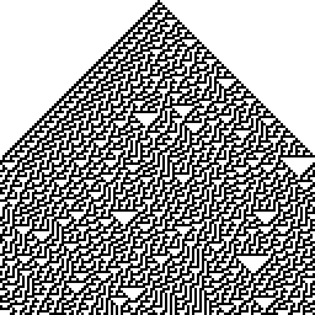
Figure 6: Rule 30
- How is an Automata Like a Brain (like a Mind)? classdiscussion
- More Lessons from Cellular Automata
Complex entities may have simple representations if the right language for expression can be found. Concision and repeatability are by-products.
There are also more dynamic versions of this idea. The "Game of Life" is one of the more famous.
Following up on the analogy to neurons, one of humanity's most brilliant people: John von Neumann, was working on a book (see also the commentary) about automata and the brain by the inventor of Information Theory, Claude Shannon.
- von Neumann Trivia
- Questions
- In what country was von Neumann born?
- At what age had von Neumann mastered calculus?
- How old was he when he started university?
- How old was I when I started university?
- How many PhD degrees did he have?
- What two universities did he attend for his two simultaneous degrees?
- Did he play a musical instrument, and if so which one?
- Famously, when he was at the Institute for Advanced Studies he annoyed his office next-door neighbor by playing his records too loudly. Who was the neighbor?
- What was the name of the early digital computer that he helped design and build? Bonus: what University?
- von Neumann was an American citizen?
- Questions
- von Neumann Trivia
- What is Automata Theory and how does it relate to neural networks? classdiscussion
9.1.2. Linear Algebra
Show me the math!
The math at the heart of neural networks and their computer implementation is linear algebra. For us, the section of linear algebra we are going to need is mostly limited to vectors, matrices and how to add and multiply them.
- What makes linear algebra linear? classdiscussion
\(T(s~a + t~b) = s~Ta + t*Tb\)
- Important Objects and Operations
- Vectors
- Matrices
- Scalars
- Addition
- Multiplication (scalar and matrix)
- Transposition
- Inverse
Class Activity
Give a definition or description of each of these objects and operations.
Most programming languages have specialized functions for defining and operating on matrices. I am using lists for ease and clarity, but for programming on larger, non-trivial, instances you will want to use your languages optimized linear algebra libraries.
1: {-# OPTIONS_GHC -Wno-unused-matches #-} 2: module MyMats where 3: 4: mata :: SimpMat Integer 5: mata = [[1,2,3],[4,5,6]] 6: matb :: SimpMat Integer 7: matb = [[-1,-2,-3],[4,5,6]] 8: matc :: SimpMat Integer 9: matc = [[1,2],[3,4],[5,6]] -- 3x2 matrix 10: matd :: SimpMat Integer 11: matd = [[7,8,9],[10,11,12]] -- 2x3 matrix 12: mate :: SimpMat Integer 13: mate = [[1,0],[0,1]] -- 2x2 identity matrix 14: matf :: SimpMat Integer 15: matf = [[2,3],[4,5]] -- 2x2 matrix 16: matg :: SimpMat Integer 17: matg = [[1]] -- 1x1 matrix 18: math :: SimpMat Integer 19: math = [[1,2,3]] -- 1x3 matrix (row vector) 20: mati :: SimpMat Integer 21: mati = [[1],[2],[3]] -- 3x1 matrix (column vector) 22: matj :: SimpMat Integer 23: matj = [[0,0],[0,0]] -- 2x2 zero matrix 24: 25: 26: type SimpMat a = [[a]] 27: 28: prettyMat :: Show a => SimpMat a -> String 29: prettyMat m = unlines $ map show m 30: 31: add2SimpMats :: Num a => SimpMat a -> SimpMat a -> SimpMat a 32: add2SimpMats = zipWith (zipWith (+)) 33: 34: rotateLList :: SimpMat a -> SimpMat a 35: rotateLList [] = [] 36: rotateLList l 37: | any null l = [] 38: | otherwise = fmap head l : rotateLList (map tail l) 39: 40: vectMult :: Num a => SimpMat a -> SimpMat a -> SimpMat a 41: vectMult v1 v2 = 42: let v1' = if length v1 == 1 then v1 else rotateLList v1 43: v2' = if length v2 == 1 then rotateLList v2 else v2 44: in multSimpMats v1' v2' 45: 46: multSimpMats :: Num a => SimpMat a -> SimpMat a -> SimpMat a 47: multSimpMats m1 m2 48: | null m1 || null m2 = 49: error "Cannot multiply empty matrices" 50: | cols1 /= rows2 = 51: error $ "Dimension mismatch: " ++ 52: show cols1 ++ " ≠ " ++ show rows2 53: | otherwise = [ [dotProd row col | col <- m2Transposed ] | row <- m1 ] 54: where 55: cols1 = length (head m1) 56: rows2 = length m2 57: dotProd v1 v2 = sum (zipWith (*) v1 v2) 58: m2Transposed = rotateLList m2 59: 60: binary2Bipolar :: (Ord a,Num a) => SimpMat a -> SimpMat a 61: binary2Bipolar inmat = 62: [[ if x <= 0 then -1 else 1 | x <- row ] | row <- inmat ] 63: 64: zeroDiagonal :: Num a => [[a]] -> [[a]] 65: zeroDiagonal = zipWith zeroDiagRow [0..] 66: where 67: zeroDiagRow i = zipWith (\j x -> if i == j then 0 else x) [0..] 68: 69: scalarMultiply :: Num a => a -> SimpMat a -> SimpMat a 70: scalarMultiply eta inmat = 71: [[ eta * j | j <- row ] | row <- inmat]:set -w :load "./src/MyMats.hs" putStrLn $ "a = " putStr $ prettyMat mata putStrLn $ "\nb = " putStr $ prettyMat matb putStrLn $ "\na + b = " putStr $ prettyMat $ add2SimpMats mata matb[1 of 1] Compiling MyMats ( src/MyMats.hs, interpreted ) Ok, one module loaded. a = [1,2,3] [4,5,6] b = [-1,-2,-3] [4,5,6] a + b = [0,0,0] [8,10,12]
c = [1,2] [3,4] [5,6] d = [7,8,9] [10,11,12] c * d = [27,30,33] [61,68,75] [95,106,117]
Classroom Exercise
Can you give the answer for \[ d \cdot c\]?
Classroom Exercise
Can you demonstrate that matrix multiplication is not commutative?
- Thinking Abstractly
There are in fact many ways to think about what a vector is. It can be thought of as a column (or row of numbers). More abstractly it is an object (arrow) with magnitude and direction. Most abstractly it is anything that obeys the requirements of a vector space.
For particular circumstances one or another of the different definitions may serve our purposes better. In application to neural networks we often just use the first definition, a column of numbers, but the second can be more helpful for developing our geometric intuitions about what various learning rules are doing and how they do it.
Similarly, we may consider a matrix as a collection of vectors or it may be more convenient to think of it as a rectangular array of numbers.
Classroom Exercise
What is the library or package in the programming language that you will use for this course that has vectors and matrix functions?
- Common Notational Conventions for Vectors and Matrices
Vectors tend to be notated as lower case letters, often in bold, such as \(\textbf{a}\). They are also occasionally represented with little arrows on top such as \(\overrightarrow{\textbf{a}}\).
Matrices tend to be notated as upper case letters, typically in bold, such as \(\mathbf{M}\).
Good things to know: what is an inner product? How does it differ from a scalar product. Can you write code in your preferred language for the inner product?
9.1.3. What is a Neural Network?
What is a Neural Network? It is a brain inspired computational approach in which "neurons" compute functions of their inputs and pass on a weighted proportion to the next neuron in the chain.
Figure 7: Simple schematic of the basics of a neural network. This is an image for a single neuron. The input has three elements and each of these connects to the same neuron ("node 1"). The activity at those nodes is filtered by the weights, which are specific for each of the inputs. These three processed inputs are combined to generate the output from this neuron. For multiple layers this output becomes an input for the next neuron along the chain.
- Non-linearities
The spiking of a biological neuron is non-linear. You will see this in both the integrate and fire and Hodgkin and Huxley models you're going to program. For our neural networks we will usually use a threshold. When the threshold exceeds a certain value our activity will jump (or step) to a new value.
\begin{equation} \mbox{if } I_1 \times w_{1,1} + I_2 \times w_{2,1} + I_3 \times w_{3,1} > \Theta \mbox{ then } Output = 1 \end{equation}What this equation shows is that Inputs ("I"'s) are passed to a neuron (also called a node or sometimes unit). Those inputs have something like a synapse. That is designated by the w's for weights. Those weights are how tightly the input and internal activity of our artificial neuron are coupled. The reason for all the subscripts is to try and help you see the similarity between this equation and the inner product and matrix multiplication rules you just worked on programming. The activity of the neuron is a sort of internal state, and then, based on the comparison of that activity to the threshold, you can envision the neuron spiking or not, meaning it has value 1 or 0. Mathematically, the weighted sum is fed into a threshold function that compares the value to a threshold ( \(\Theta\) ), and passes on the value 1 if it is greater than the threshold and 0 (sometimes -1) for the inactive state.
To prepare you for the next steps in writing a simple perceptron (the earliest form of artificial neural network), you should try to answer the following questions.
Classroom Questions
- What, geometrically speaking, is a plane?
- What is a hyperplane?
- What is linearly separability and how does that relate to planes and hyperplanes?
One of our first efforts will be to code a perceptron to solve the XOR problem. In order for this to happen you should know a bit about Boolean functions and what an XOR problem actually is.
- Examples of Boolean Functions and How They Map onto our Neural Network Intuitions
- The "AND" Operation/Function
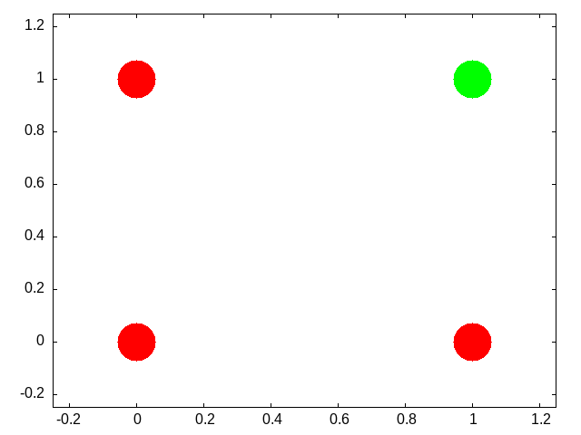
- The "OR" Operation/Function
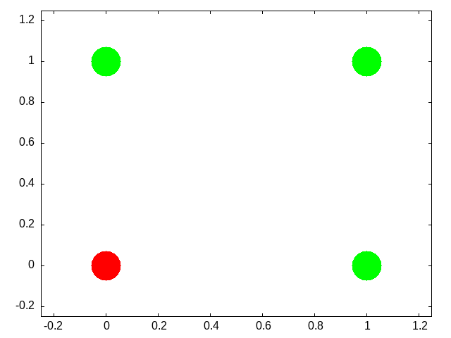
- The "XOR" Operation/Function
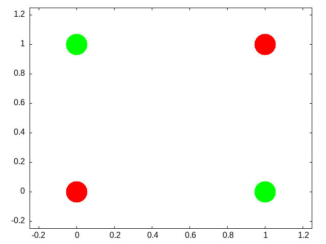
Can you draw the truth tables that match each of these graphs?
This short article provides a nice example of linear separability and some basics of what a neural network is.
- Exercise XOR
Using only not, and, and or operations draw the diagram that allows you to compute in two steps the xor operation. You will need this logic to code up a perceptron.
This was given as an optional homework. Here is another take on this same idea.
- Alternate XOR classroom_activity
- Each group gets an "AND" and two "NOR" cards.
- On the back of each of these fill in the appropriate truth table.
- On your own piece of paper construct the truth table for the XOR function.
- As a group pick five of your members. Designate each of them to be either Input1, Input2, AND, NOR1, and NOR2.
- Construct your "wiring" diagram. Who does Input1 talk to? Input2, and so on.
- Your objective is to connect your members together such that when I tell your Input1 and Input2 people what their inputs are they will pass this to the next person in your groups chain. Those people will evaluate their inputs based on their truth table and pass their output forward.
- When we compare the original input to the final output we should be able to see that you have implemented the XOR function.
- First Order Logic - Truth Tables
Truth tables are a common way of presenting the boolean functions. You have columns for each of the inputs or variables, and as many rows as you will need to show every combination of inputs, and one more column for the output. Let's say the number of columns is \(n + 1\). For this many columns you will need \(2^n\) rows. Can you see why? An example,
- Truth Tables by the Numbers.
Can neural networks encode logic? Is the processing zeros and ones enough to capture the richness of human intellectual activity?
I presented this equation above as an example of a neuron like calculation.
\begin{equation} \mbox{if } I_1 \times w_{1,1} + I_2 \times w_{2,1} + I_3 \times w_{3,1} > \Theta \mbox{ then } Output = 1 \end{equation} - Boolean Logic
George Boole, Author of the Laws of Thought.
https://archive.org/details/investigationofl00boolrich https://plato.stanford.edu/entries/boole/#LifWor
There is a long tradition of representing human thought as the consequence of some sort of calculation of two values (true or false). If you have two values you can swap out 1's and 0's for the true and false in your calculation. They even seem to obey similar laws. The conjunction (AND) of two true things is only true when both are true. If you take T = 1, then T AND T is the same as \(1~\times~1\).
We have just seen how a simple threshold neural unit can function like a logic gate. We have also seen how we can string them together to get more complicated functions (like the XOR). But do we have to do all this manually? Or can we design nodes that can learn the correct weights all on their own?
9.1.4. Our First Neural Network: The Perceptron
In many ways the Perceptron can be regarded as the first neural network ever.
The perceptron (see Figure 8) was the invention of a psychologist, Frank Rosenblatt (pdf). He was not a computer scientist. Though he obviously had a bit of the mathematician in him.
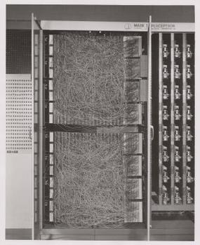
Figure 8: The Mark I computer for computing the perceptron's activity. Details can be found on Wikipedia's page.
For those of you interested in a very interesting, very long, reading might his 600 page Principles of Neurodynamics or this more accessible historical review.
But a good intuition for Rosenblatt's frame of mind with this research can be gained just from the foreword:
For this writer, the perceptron program is not primarily concerned with the invention of devices for "artificial intelligence", but rather with investigating the physical structures and neurodynamic principles which under lie "natural intelligence". A perceptron is first and fore most a brain model, not an invention for pattern recognition. As a brain model, its utility is in enabling us to determine the physical conditions for the emergence of various psychological properties.
- The Perceptron Rules
The algorithm the perceptron follows is simple enough to be done by hand. But before doing that take a minute to think what is trying to do. It is trying to go from one set of "weights" to another set of "weights". If you think of all the weights as coordinates in a Cartesian graph then you can visualize each cycle of updating as adding another point to the graph. Squint your eyes and the dots merge to a path. A path through the weight space. This is a dynamic process. A theme that we return to in a later Chapter (add link here).
In short, the perceptron "rules" are the equations that characterize what a perceptron should do when it gets some input, computes and output and learns if its guess is right or wrong. It revises its behavior based on this feedback, and thus can be said to learn. A lot can be done with these simple equations.
\(I = \sum_{i=1}^{n} w_i~x_i\)
If \(I \ge T\) then \(y = +1\) else if \(I < T\) then \(y = -1\)
If the answer was correct, then \(\beta = +1\), else if the answer was incorrect then \(\beta = -1\).
The "T" in the above equation refers to the threshold. This is a user defined value that is usually set to zero for convenience.
Updating is done by \(\mathbf{w_{new}} = \mathbf{w_{old}} + \beta y \mathbf{x}\)
- Be The Perceptron
This is a pencil and paper exercise. Before coding it is often a good idea to try and work the basics out by hand. This may be a flow chart or a simple hand worked example. This both gives you a simple test case to compare your code against, but more importantly makes sure that you understand what you are trying to code. Let's make sure you understand how to compute the perceptron learning rule, but doing a simple case by hand.
Beginning with an input of 0.3 0.7
And an initial set of weights of -0.6 0.8
and a class of 1.
Compute the value of the new weight vector with pen and paper.
:set -isrc :load ./src/Perceptron.hs updWeight0 ([[0.3,0.7]],1) [[-0.6,0.8::Double]][1 of 2] Compiling MyMats ( src/MyMats.hs, interpreted ) [2 of 2] Compiling Perceptron ( src/Perceptron.hs, interpreted ) Ok, two modules loaded. [[-0.3,1.5]]
Next steps. Consider this as the data matrix where the first two elements in a row are the two inputs and the third element in a row is the "class" of the output.
\(\begin{bmatrix} 0.3 & 0.7 & 1.0 \\ -0.5 & 0.3 & -1.0 \\ 0.7 & 0.3 & 1.0 \\ -0.2 & -0.8 & -1.0 \end{bmatrix}\)
using the starting weight -0.6 0.8 try a few cycles through the data by hand and then move on to writing the perceptron rule into code so that you can automate the updating step. Haskell code for some of these functions can be found here.
:set -Wno-name-shadowing putStrLn $ unlines $ map show testData putStr "\n\n\n" newwt = last $ oneRound myw testDataFs checkWt newwt testData putStr "\n\n" newwt2 = last $ oneRound newwt testDataFs checkWt newwt2 testData([[0.3,0.7]],1.0) ([[-0.5,0.3]],-1.0) ([[0.7,0.3]],1.0) ([[-0.2,-0.8]],-1.0) [(1.0,1.0),(1.0,-1.0),(1.0,1.0),(-1.0,-1.0)] [(1.0,1.0),(-1.0,-1.0),(1.0,1.0),(-1.0,-1.0)]
- More Abstract Thinking
Each time through the perceptron rule new weights are computed. Imagine these two weights as coordinates for the head of a vector with its base at the origin of a Cartesian plane. Imagine as you iterate that you are rotating your weight vector around an origin.
The decision plane for your network is perpendicular to the vectors and is anchored at the bottom of the arrow. If you could compare this plane to the location of the data points you would see that the rule is learning to find the decision plane that puts all of one class on one side of the line and all of the other class on the other side. That is why it is limited to problems that are linearly separable.
- Bias is a Good Thing (at least here it is)
These data were selected such that the base of the vector could separate them while anchored at zero. However, for many data sets you not only need to learn what direction to point the vector, but you also need to learn where to anchor the vector. This is done by including a bias weight. Add an extra dimension to your weight vector and your inputs. For the inputs it will just be a constant value of 1.0, but this extra, bias weight, will also be learned and allows you to achieve, effectively, a translation away from the origin to be able to separate points that are more heterogeneously scattered.
- Geometrical Thinking
- What is the relation between the inner product of two vectors and the cosine of the angle between them?
- What is the sign for the cosine of angles less than 90 degrees and those greater than 90 degrees?
- How do these facts help us to answer the question above?
- Why does this reinforce the advice to think geometrically when thinking about networks and weight vectors?
- Development
\begin{align*} % Step 1: The Law of Cosines c^2 &= a^2 + b^2 - 2ab\cos\theta \\[1.0em] % Step 2: Geometric Starting Point (Law of Cosines) \|x - w\|^2 &= \|w\|^2 + \|x\|^2 - 2 \|w\| \|x\| \cos\theta \\[1.0em] % Step 3: Algebraic Expansion (Component-Wise) \|x - w\|^2 &= \sum_{i=1}^{n} (x_i - w_i)^2 \\ &= \sum_{i=1}^{n} \left(x_i^2 - 2w_i x_i + w_i^2\right) \\ &= \sum_{i=1}^{n} x_i^2 + \sum_{i=1}^{n} w_i^2 - 2 \sum_{i=1}^{n} w_i x_i \\ &= \|x\|^2 + \|w\|^2 - 2 \sum_{i=1}^{n} w_i x_i \\[1.0em] % Step 4: Equivalence and Simplification \|x\|^2 + \|w\|^2 - 2 \|w\| \|x\| \cos\theta &= \|x\|^2 + \|w\|^2 - 2 \sum_{i=1}^{n} w_i x_i \\ -2 \|w\| \|x\| \cos\theta &= -2 \sum_{i=1}^{n} w_i x_i \\ \sum_{i=1}^{n} w_i x_i &= \|w\| \|x\| \cos\theta \end{align*}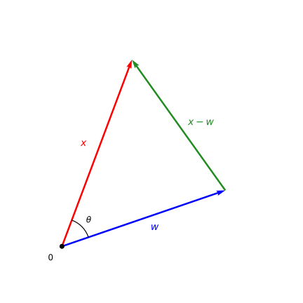
#+begin_export htmlPerceptron Decision Boundary & Dot Product Explorer
Click and drag anywhere on the canvas to move input vector x around weight vector w. Code by Gemini 2026-11-09
Angle: 0° | Cos(θ): 0.00 | Dot Product: 0.00#+end_exportOutput at origin (= b)
Distance |b| / ‖w‖
AND cases correct
Shaded side: net input above zero ("yes"). Filled dots should be yes and hollow dots should be no. A teal outline means correctly classified and coral means misclassified. Dashed lines are contours of w·x + b; the solid line is the zero contour. Try w at 45°, ‖w‖ = 1.4, b = −1.5. Written by Claude Opus 5.5 2026-11-09
- Bias is a Good Thing (at least here it is)
- More Abstract Thinking
9.1.5. The Delta Rule - Homework
The Delta Rule is another simple learning rule that is a minimal variation on the perceptron rule. It is used more frequently, and it has the spirit of Hebbian learning, which we will learn more about soon. The homework asks you to write code to test and train an artificial neuron using the delta learning rule.
- For an easy start create some pseudo random linearly separable points on a a sheet of paper. Label one population as 1 and the other population as -1.
- For a more challenging set-up create the data programmatically using random numbers and some method that allows you to vary how close or distant the points are to the line of separation, and how many points there are to train on.
- The Delta Learning rule is: \(\Delta~w_i = x_i~\eta(desired - observed)\)
- Submit your code that has your test data in it. Start with an initial random weight and use the delta rule to learn the correct weighting to solve all your training examples. Then test on a new set of points that you did not test on but that are classified according to the same rule. Your code should assess how well the trained rule classifies the test data.
9.1.6. Not all Networks are the Same: Hopfield
- Feedforward
- Recurrent
- Convolutional
- Multilevel
- Supervised
- Unsupervised
The Hopfield network12 has taught many lessons, both practical and conceptual. Hopfield showed physicists a new realm for their skills and added recurrent (i.e. feedback) connections to network design (output becomes input). He changed the focus from network architecture to that of a dynamical system. Hopfield showed that the network could remember and it could do some error correction, it could reconstruct the "right" answer from faulty input.
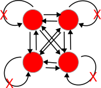
Figure 9: Illustration of a Hopfield Network's Connection Pattern With Four Nodes
- How a Hopfield Network Operates
- Each node has a value.
- Each of those arrowheads has an associated weight.
- The line with the "x" indicates that there are no self connections.
- All other connections for all other units are present and go in both directions, and are typically the same in both directions.
Test Your Understanding
- What does the input for a network like this with four nodes look like when framed in the linear algebra terms we just learned?
- A weight is a number associated to each connection. Tell me what the weights should look like in terms of the linear algebra constructs.
- How might we conceive of "running" the network for one cycle in terms of the above?
- A Worked Example
Inputs can be thought of as vectors. Although I have drawn the network like a square that shape is really independent of the structure of data flow. Each node needs an input and each node will need a weighted contact to all the other nodes. Consider the following two input patterns and the following weight matrix.
\(\overrightarrow{a} = \left[1, 0, 1, 0\right]^T\)
\(\overrightarrow{b} = \left[0, 1, 0, 1\right]^T\)
$weights = \begin{bmatrix} 0 & 3 & -3 & 3
3 & 0 & 3 & -3
-3 & 3 & 0 & 3
3 & -3 & 3 & 0
\end{bmatrix} $How do you compute the output? Which comes first: the matrix or the input vector and why?
hopa = [[1,0,1,0]] :: SimpMat Integer hopb = [[0,1,0,1]] :: SimpMat Integer outProda = multSimpMats (binary2Bipolar (rotateLList hopa)) $ binary2Bipolar hopa outProdb = multSimpMats (binary2Bipolar (rotateLList hopb)) $ binary2Bipolar hopb outProdBoth = add2SimpMats outProda outProdb noSelfConnections = zeroDiagonal outProdBoth learnRate = scalarMultiply 1 noSelfConnections putStr $ prettyMat learnRate[0,-2,2,-2] [-2,0,-2,2] [2,-2,0,-2] [-2,2,-2,0]
Hopfield networks use a threshold rule. This non-linearity is, at least metaphorically, like the threshold that says whether a neuron in the brain or in our integrate and fire model fires. For the Hopfield network our threshold rule says:
\(output(t)=\begin{array}{c} 1~\mbox{if } t \geq \Theta\\ 0~\mbox{if } t < \Theta \end{array}\)
Θ represents the value of our threshold and for now set it to zero.
In Class Activity
- Calculate the output to each of the two input patterns.
- Then to test your intuition, you should guess what output you would get for an input of \(\left[1,0,0,0\right]^T\).
- Calculate it.
- Is A or B is closer to this test input?
- What does it means, in this context, for one vector to be "closer" to another?
- An Aside Distance Metrics
Metrics relate to measurement. For some operation to be a distance metric it should meet three intuitive requirements and one that is maybe not as obvious. To measure the distance between two things we need an operation that is binary. That is, it takes two inputs. In this case that would be our two vectors. It's result should always be non-negative. A negative distance would clearly be meaningless. Our output should be symmetric. Meaning that \(d(A,B)=d(B,A)\). The distance from Waterloo to Toronto ought to come out as the same as going from Toronto to Waterloo. Our metric should be reflexive. The distance from anything to itself ought to be zero. Lastly, to be a distance metric, our operation must obey the triangle inequality.
The familiar distance measure of everyday life is the Euclidean. A distance measure calculated as the number of mismatched bits is the Hamming distance.
For perceptrons we talked about how the weight vector moved the direction it pointed. Here we don't have the weight vector moving, but you can visualize what is happening as updating a point in space. When we first input our four element vector we have a location in 4-D space. We multiply the first row of our weight matrix against our column of the input vector and we see, in effect, what is the effect on our first element (node) of all the other weighted inputs coming in to it. We then "update" that location. Maybe we flip it from a 1 to a zero (or vice versa). Then we try the next row of the weight matrix to see what happens to the second element. As we change the values of our nodes we are creating new points. The sequence of points is a trajectory that we are tracing in the input space. In this simple situation here we only require one pass to reach the final location, but in other settings we might not. In that case we just keep repeating the process until we do. One of the wonderful insights that Hopfield had was that by conceptualizing this process as an "energy" he could mathematically prove that the process would always reach a resting place.
- Hebb's Outer Product Rule
Ask yourself
Why is this learning rule called "Hebb's"? Who was the Hebb it is named after?
The strength of a change in a connection is proportionate to the product of the input and outputs, i.e. \(\Delta A[i,j] = \eta f[j]g[i]\) and \(g[i] = \sum_j~A[i,j]~f[j]\) therefore, \(\vec{g} = \mathbf{Af}\).13
You will want to know
- What is an outer product?
- How do you compute it in your programming language of choice?
9.1.7. John Hopfield
To motivate our learning, and to put a human face on the project these two links give you a glimpse of Hopfield talking about his work at the 2024 Nobel Prize lectures, and a nice long podcast that gives a slow, thorough, tutorial discussion of what it is all about. We will come back to this later, but for now start listening. There is an associated homework.
- Nobel Prize
- Podcast on the Hopfield Network
This theoretical neuroscience podcast gives a nice long look at the Hopfield Network. It works up to its creation, its abstraction, and it social impact on shaping the field of computational neuroscience. It is long, but, if you make your way through it you will have a good overview of the model before you start coding it.
9.1.8. Hopfield Homework Description: Robustness to Noise (this might take awhile).
Overview of the steps to take:
- Create a small set of random data for input patterns.
- Generate the weights necessary to properly decode the inputs.
- Conceive of a way to randomly corrupt the inputs. Perhaps by flipping some bits and show that your network does correctly decode the uncorrupted inputs.
- Report the accuracy of the output. Explore how the length of the input vector and the number of bits your "flip" impact performance.
More detailed instructions:
- Make the input patterns 2-d, square and of size "n".
- Use a bipolar system and have, roughly, equal numbers of +1s and -1s in your patterns.
- Make a few of them and store them in some sort of data structure.
- Using those patterns, compute the weight matrix with the following equation: \(w_{ij} =\frac{1}{N} \sum_{\mu} value^\mu_i \times value^\mu_j\) Where N is the size of the patterns, that is how many "neurons". \(\mu\) is an index for each of the patterns, and \(i\) and \(j\) refer to the neurons in the pattern.
- Program an asynchronous updating rule, run your network until it stabilizes, and then show that you get back what you put in.
- Then do the same for at least one disrupted pattern (where you flipped a couple of bits around.)
10. Theory Creation in the Cognitive and Psychological Sciences
I have been wondering about the concept of explanation. I don't know if there is an agreed upon definition in this context. How do we know that an observation is "explained" other than that it is predicted by a theory? Or is the mathematics the same, and is explanation synonymous with post-diction? – Joachim Vanderkerckhove
10.1. What is a scientific theory?
And how do the notions of prediction and explanation fit into this? Is the ability to predict the tides a theory of the tides? Is it an explanation of the tides?
10.1.1. What is prediction?
And what makes for a good/bad prediction?
10.1.2. What is explanation?
And, again, good v. bad explanations?
10.2. Classroom Activity
Pick anything you think is an example of a good scientific theory. Be prepared to name it and explain it and to respond to questions that critique it.
10.3. Do we have a theory crisis in Psychology?14
You might find these citations relevant for discussion.15
10.4. Classroom Activity
Did you pick a psychological example? Do you agree that there is a theory crisis in Psychology?
10.5. What are scientific theories good for? Or, in other words, why should we care?
10.6. What makes a theory a good theory?
Try to answer this by using positive and negative examples from the theories selected by your classmates.
10.7. What are the first steps towards building a theory?
- Phenomena
- Analogies
- Should we adhere to a deductive-nomological model?
- Do we want a causal model? What do we mean, really, by A causes B and how can we assess it?
10.8. What should you do next if you think you have a theory?
10.8.1. What role should a model play?
- Can a model be verbal?
- Is it enough to express a model in code or pseudo-code?
- Is mathematics necessary?
10.9. Formal Modeling (Advocacy)
10.9.1. Advantages
- Everything must be defined
- The importance of actual values cannot be avoided
- Inconsistencies and gaps made obvious
- Can be run on a computer? Is this really an advantage? What are the guarantees that the code we run is a faithful implementation of our ideas? It is interesting to me that the example used in the notes I am borrowing from use Einstein and Eddington's experience with solar eclipses, but this did not use a computer program. Instead it was just math.
10.10. Steps to Formalizing a Model
- Define the phenomena (not the specific experiments, but the phenomena writ large [the larger the better]).
- Are there levels?
- Can you specify processes?
- Be open to emergence. Do the automata we programmed show emergence. We only specified the colors of pixels, but patterns appeared.
- Can you find a mathematical form for your process (e.g. exponential)?
10.11. Can you now provide a good example of a psychological theory?
10.12. Some Interesting Reading on this Topic
(In addition to the references listed below).
- Formalizing Verbal Theories. A tutorial by dialogue.
- Forms of explanation and understanding for neuroscience and artificial intelligence
- Models are Stupid, and We Need More of Them
- Productive Explanation: A framework for evaluating explanations in psychological science
- Theory Construction Methodology: A practical framework for building theories in psychology
10.13. Theory Homework
In "Models are Stupid"(see link above) Smaldino writes:
Hopfield’s Model of Content-Addressable Memory
Memory - the ability to store information for later recall—is a wondrous property of neural networks that makes possible all but the most rudimentary forms of cognition. By the early 1980s, long-term potentiation—the process by which Donald Hebb’s theory that “neurons that fire together wire together” occurs—was relatively well described. It was believed that the formation of such associations was intrinsic to more complex forms of memory, such as that by which a person’s face is encoded and then later recognized, but the mechanism was unclear. How could a brain possibly use partial information, like an occluded face, to reconstruct information encoded in memory? To begin to answer this question, the biophysicist John Hopfield (1982) constructed a simple model of two-state neurons in a fully connected network. Edge weights were determined by a process of Hebbian learning assumed to have already occurred, so that a number of configurations(or states) of “on” and “off ” neurons were encoded in the network, with edges assumed to be bidirectionally symmetrical (i.e., undirected). Using mathematics derived from statistical physics, Hopfield showed firstly that in such a system, encoded states would be stable, and secondly that if initialized in a non-encoded state, the network would self-organize into the encoded state that most closely matched the initialized state. In other words, he had a model for how memory retrieval could emerge spontaneously in a simple neural network. This model is almost absurdly simplistic, even stupid in its assumptions. Neurons are either on or off, ignoring subtleties of firing rates or even graded activation. Directionality is also ignored; links between neurons are equally strong in each direction. Exactly how the network is presumed to first arrive in its initial state is left a mystery. Yet analysis of the model showed that something like biological neural networks could produce content-addressable memory. Hopfield himself later showed that the model’s functioning was robust to the relaxation of some of his strict assumptions (Hopfield, 1984), and the work has laid the foundation for much subsequent work in understanding the neurobiology of memory.
Your task is to answer the question: Does Hopfield express a theory? Make sure you address the issues of what constitutes a theory that we discussed above and that you include any relevant facts from your own Hopfield model code and experiments.
Is this a theory of memory? Are there room for others? What is missing, if anything?
This is an opportunity for you to think deeply and critically about theory. A good foundation now will make you a wiser, probably more skeptical, consumer of future research so put your back into it and let me see some of your best work. Write clearly, logically, and persuasively. I will leave length up to you. I am not looking for how many words you write, but the completeness of your ideas in the development and defense of your thesis.
11. Algebraic Psychology
This section, still to be written, will present some of the mathematics of abstract algebra (not as hard as it sounds), and then show how that can be used to approach a cognitive modeling problem. The example problem we will use is a comparison of formal concept analysis with Paul Thagard's Theory of Explanatory Coherence.16
As a placeholder, and in case I run out of time, I will insert some of the slides I will be using March 12, 2026 for a lecture in CogSci 600.
11.1. Opening Questions
11.1.1. What is a theory?
11.1.2. Name a psychological theory.
11.2. I demand a satisfactory explanation
11.2.1. A celestial example and a Planetary Context
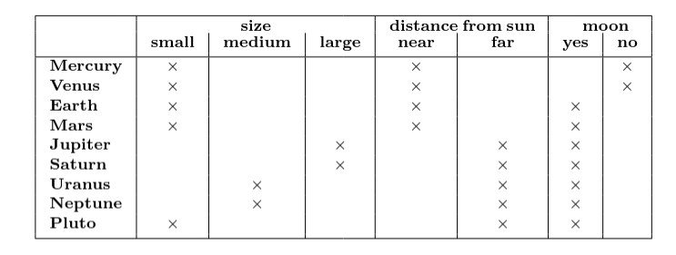
11.3. Thagard's Principles of Explanatory Coherence
- Symmetry
- Analogy
- Contradiction
- Competition
- Acceptability
- Data Priority
- Explanation
11.4. Taking up all the oxygen in the room
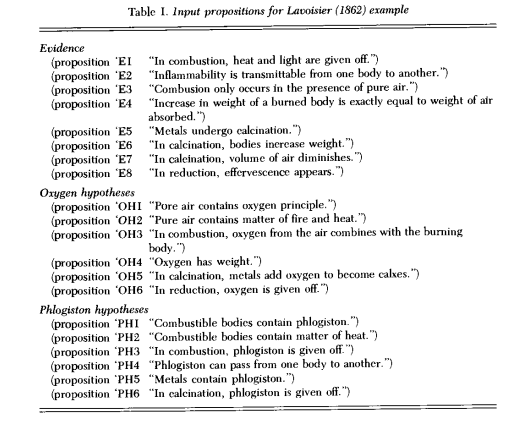
11.5. And the network said ..

11.6. From Lisp to R
# ECHO Model in R
# Ported from Paul Thagard's MacLisp implementation
echo_env <- new.env()
echo_env$min_activation <- -1.0
echo_env$max_activation <- 1.0
create_unit <- function(name, activation = echo_env$default_activation) {
unit <- list(
name = name,
activation = activation,
new_activation = activation,
)
weight_of_link_between <- function(unit1_name, unit2_name) {
exp_unit <- get_unit(exp)
exp_unit$explains <- unique(c(exp_unit$explains, explanandum))
}
# Run Lavoisier example
h2 <- example_lavoisier()
11.7. And the network said … (ECHO, Echo, echo …)
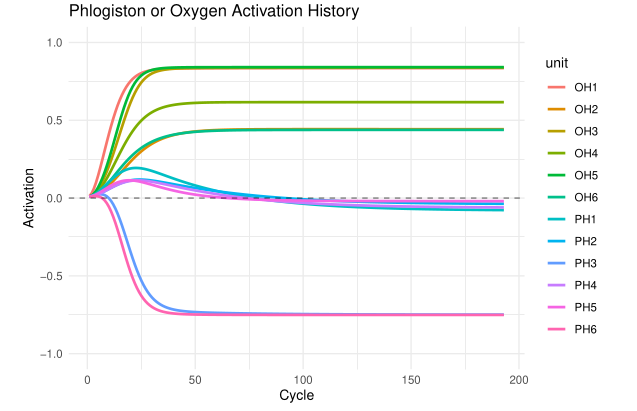
Can we do better?
11.8. Formal CONTEXTS
- A set of objects (we'll denote with \(G\) by convention).
- A set of attributes (we'll denote with \(M\) by convention).
- And a relation (\(R\)) between these two sets.
- It is often convenient to present this as a matrix (as we did for the planets).
11.9. Formal CONCEPTS
- Sets of objects that all share the same attributes.
- Sets of attributes that are all possesed by the same objects.
- Both with nothing left out.
That is, for \(A \subseteq G\) and \(B \subseteq M\) if we define the following (') operations thusly:
\begin{eqnarray} A' &=& \{ m \in M~|~\forall g \in A~gRm\} \\ B' &=& \{ g \in G~|~\forall m \in B~gRm\} \\ \mbox{then, } A'' &=& A \mbox{, defines a concept.} \end{eqnarray}
11.10. A Romantic Connection
Definition: Galois Connection \(a \leq F(b) \iff G(a) \geq b\)
Where \(a \subseteq A\mbox{, and }b \subseteq B\) with \(F:B \rightarrow A\mbox{, and }G:A \rightarrow B\) bijective and monotonic functions.
Note that this works for our concepts.
11.11. A celestial example
Is the combination of Earth and Mars a concept?
\begin{eqnarray} A &=& \{ Earth,~Mars\}\\ A' &=& \{small,~near,~moon\}\\ A'' &=& \{Earth,~Mars\} \end{eqnarray}11.12. Jacob's Ladder
11.12.1. A Planetary Lattice
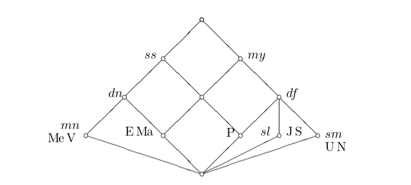
11.12.2. The Context
11.13. From ECHO to FCA: The Lavoisier Context
[1] "Lavoisier vs Phlogiston Explanatory Context:" OH1 OH2 OH3 OH4 OH5 OH6 PH1 PH2 PH3 PH4 PH5 PH6 E1 1 1 1 0 0 0 1 1 1 0 0 0 E2 0 0 0 0 0 0 1 0 1 1 0 0 E3 1 0 1 0 0 0 0 0 0 0 0 0 E4 1 0 1 1 0 0 0 0 0 0 0 0 E5 1 0 0 0 1 0 0 0 0 0 1 1 E6 1 0 0 1 1 0 0 0 0 0 0 0 E7 1 0 0 0 1 0 0 0 0 0 0 0 E8 1 0 0 0 0 1 0 0 0 0 0 0
Evidence E1-E8 as objects, hypotheses OH1-OH6 (Oxygen) and PH1-PH6 (Phlogiston) as attributes. A value of 1 means the hypothesis explains the evidence.
11.14. Sample Formal Concepts
[[1]]
({E1, E2, E3, E4, E5, E6, E7, E8}, {})
[[2]]
({E1, E2}, {PH1, PH3})
[[3]]
({E2}, {PH1, PH3, PH4})
[[4]]
({E1, E3, E4, E5, E6, E7, E8}, {OH1})
[[5]]
({E8}, {OH1, OH6})
Each concept shows:
- Extent: Set of evidence explained together
- Intent: Set of hypotheses that explain exactly that evidence
11.15. Implications in the Lavoisier Context
[1] "Key implications discovered:"
Implication set with 3 implications.
Rule 1: {OH1, OH4, OH6} -> {OH2, OH3, OH5, PH1, PH2, PH3, PH4, PH5, PH6}
Rule 2: {OH1, OH4, OH5, PH5, PH6} -> {OH2, OH3, OH6, PH1, PH2, PH3, PH4}
Rule 3: {OH1, OH3, OH6} -> {OH2, OH4, OH5, PH1, PH2, PH3, PH4, PH5, PH6}
Implications reveal logical dependencies: if evidence supports certain hypotheses, what other hypotheses must also be supported?
11.16. The Lavoisier Concept Lattice
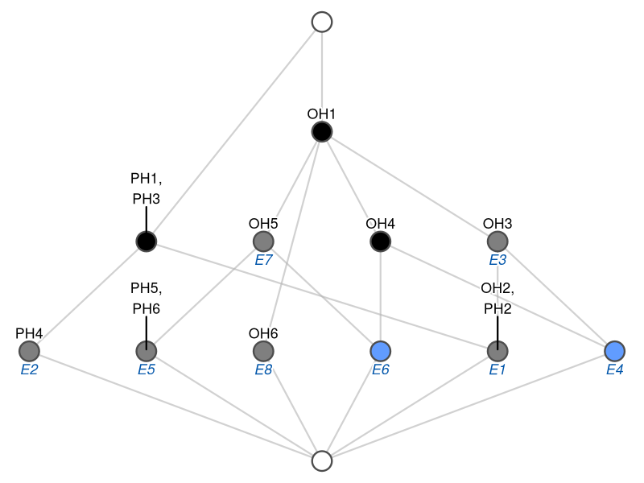
Figure 10: "The lattice structure reveals the hierarchical organization of explanatory relationships."
12. Reasons to Prefer FCA
12.1. Data Processing Inequality
Theorem: Data Processing Inequality
For random variables \(X\), \(Y\), and \(Z\) that form a Markov chain \(X \to Y \to Z\), we have: \[I(X;Z) \leq I(X;Y)\] where \(I(X;Y)\) denotes the mutual information between \(X\) and \(Y\).
In our context: Information cannot be gained by processing data through additional theoretical layers.
12.2. Formal Contexts are Chu Spaces
Definition: Chu Space A Chu space over a set \(K\) is a triple \((A, r, X)\) where:
- \(A\) and \(X\) are sets (called points and states respectively)
- \(r\): A × X → K$ is a function (the evaluation map)
The Chu space defines a duality via: \[a^\perp = \{x \in X \mid r(a,x) = 0\}\] \[x^\perp = \{a \in A \mid r(a,x) = 0\}\]
Formal contexts are Chu spaces over \(\{0,1\}\) where objects are points, attributes are states, and the incidence relation is the evaluation map.
12.3. Chu Spaces are *-autonomous categories
In the category of Chu spaces, every object \(A\) has a dual \(A^*\) such that: \[A^{**} \cong A\]
The *-autonomous structure provides:
- Duality: Each Chu space has a canonical dual
- Internal Hom: \([A,B] = A^* \otimes B\)
- Self-duality: The category is equivalent to its own opposite
This categorical framework unifies logic, geometry, and computation through the lens of duality.
12.4. Unifying Logic, Geometry, and Computation
- Logic: Chu spaces model linear logic's multiplicative fragment, where \(A \multimap B \equiv A^* \otimes B\)
- Geometry: Stone duality connects topological spaces with Boolean algebras via Chu construction
- Computation: Game semantics emerges naturally—strategies are morphisms in Chu categories
- Cognition: Formal concepts capture the duality between extension (objects) and intension (properties)
13. But wait! There's more!
13.1. I probably ran out of time so come talk to me
- Monoids
- Monoidal Categories
- Monoidal and Comonoidal Objects
- Hypergraphs
- Categories of Hypergraphs
- Connections to Other Areas of Cognition
13.1.1. Bibliography and Other Readings
14. Final Projects
(also available as a pdf on learn)
14.1. Overview
The goals of the final project are:
- Active learning
- Learning through teaching
- Acquiring important professional skills such as:
- Presentation development
- Oral presentation practice
- Project Planning
- Group collaboration
- Technical Writing
- Coding Relevant to Psychology and Neuroscience Modeling
- Technical Knowledge
In pursuit of these goals a fair amount of time in the last few weeks will be saved for the group project. Each of you will have been assigned by me to a group. The members of the groups will work on the project collaboratively dividing the responsibilities and workload as jointly decided.
The deliverables will be two. First, there will be on the last course day a 1/2 hour presentation that will:
- Provide a general introduction to the topic. This will not only be a technical introduction, but will help us understand the history and motivation for using this tool/technique.
- A tutorial survey of the details. This might include the mathematical underpinnings and derivation as well as any pertinent novel notation.
- Practical aspects of coding the algorithm. Ideally working code written by the group will be demonstrated. This is expected to be simple and modest in scope. So, it might be appropriate in addition to the group's own code to show off libraries or software written by others and useful for more complicated or realistic demonstrations.
The emphasis of the oral presentation is on learning. Both of us: the audience and the group presenting. This is a time to practice your presentation style and any novel ideas you have about how to give a memorable and instructive presentation. There will be no grade beyond a complete/incomplete.
The goal of the written reports is to provide an opportunity to develop and share a more rigorous and complete idea of the same general scope, but with increased detail and space for explanations. While a written document is expected other materials may make sense as part of the submission. For example, source code is likely to be a part of all projects. In addition, images or movies of simulations and similar materials may be appropriate. That is for the group to decide.
14.2. Evaluation
- For the oral presentation the evaluation is strictly limited to completion. However, I hope that students will look upon this as an opportunity for practice, and also will be respectful of their peers time. You will be listening much more than speaking so keep that in mind as you plan the quality of your own offering.
- For the written, final presentation I will be evaluating:
- Clarity, completeness, and professionalism of the writing.
- Documentation of the topic should include appropriate citations. I don't care so much about what citation style you use as long as it is consistent and follows some professional standard.
- The tutorial code provided will be evaluated for style, accuracy, and the ease with which someone else (me for example) can get it working properly. That may mean the inclusion of instructions.
- The value of any additional materials.
- A general assessment of the pedagogical value of the presentation as a guide to help others understand the material. Ask yourself if your presentation would be a good guide for me as an instructor to use it as the basis for developing additional units of material to present in this course?
14.3. Project Topics
Each group will be assigned one of the topics below. Send me your groups ordered preference list as soon as possible. I have added some starter references, but those should not be viewed as sufficient in and of themselves. It is just to give a chance to get a better sense of what the topic is about and what kind of resources you might be looking for.
14.3.1. Production Rules
Some of the classic cognitive architectures such as SOAR and ACT-R use production systems. They have a long history in cognitive neuroscience. What are they? Why are they suggested to be a good fit? What are some of the common software packages and who would we use them?
- Starting References and Resources
- https://soar.eecs.umich.edu/soar_manual/ The Soar user manual
- https://wires.onlinelibrary.wiley.com/doi/full/10.1002/wcs.1488 An online article describing the system
14.3.2. Reinforcement Learning
There is a "classic" textbook available on line, code as well. Reinforcement Learning is a common paradigm and mechanism for explaining a multitude of behaviors. The basic idea is that you do more of whatever it is that gives you a reward. The mapping of dopamine dynamics onto reward delivery has been heralded as one of the great successes of computational neuroscience.
- Starting References and Resources
- The canonical textbook, freely available online, is Sutton & Barto's Reinforcement Learning: An Introduction (2nd ed.). Both the PDF and code examples are available at: http://incompleteideas.net/book/the-book-2nd.html
- For the neuroscience connection, see the dopamine and reward prediction error review cited below.
- A practical Python-focused tutorial series using OpenAI Gym (now Gymnasium) is a good hands-on complement: https://gymnasium.farama.org/
14.3.3. Agent Based Models
Agent Based Models (ABMs) allow us to simulate how complex, population-level patterns emerge from the local interactions of many individual agents, each following simple rules. They have been applied to problems ranging from the spread of disease to the emergence of social norms and collective neural dynamics.
- Starting References and Resources
- Axelrod, R. (1997). The Complexity of Cooperation: Agent-Based Models of Competition and Collaboration. Princeton University Press. — a foundational text on ABMs in the social and behavioral sciences.
- NetLogo is a widely used, beginner-friendly ABM environment with an extensive model library and its own tutorial: https://ccl.northwestern.edu/netlogo/
- Mesa is the primary Python library for agent-based modeling and a natural choice if you prefer to stay in Python. Documentation and tutorials are at: https://mesa.readthedocs.io/ and the repository is at: https://github.com/projectmesa/mesa
- The Santa Fe Institute's Complexity Explorer offers free online courses and resources that provide good conceptual grounding: https://www.complexityexplorer.org/
14.3.4. Cognitive Architectures Built on Spiking Neural Networks
In an effort to establish neural verisimilitude, some cognitive architectures ride on top of software implementing the computation by spiking neural networks. Two well know examples are Nengo (invented by UWaterloo CTN director Chris Eliasmith) and Leabra. How do they work? How could we use them, both practically and conceptually?
14.3.5. Dynamical Systems Approach to Neural and Cognitive Modeling
As we saw in our Hodgkin Huxley models, there is a natural view of neural activity that sees it as changing over time, and sees the nature of that change as the key thing we should be focusing on in our modeling.
14.3.6. Causal Models for Cognition
What causes what? There is actually a mathematics of this that can be used to model areas of cognition such as development or reasoning.
- Starting References and Resources
- https://www.tandfonline.com/doi/epdf/10.1080/26939169.2022.2128118?needAccess=true
- https://www.researchgate.net/profile/David-Lagnado/publication/264247776_Causality_in_Thought/links/55b20e5708ae092e965013dd/Causality-in-Thought.pdf?_tp=eyJjb250ZXh0Ijp7ImZpcnN0UGFnZSI6InB1YmxpY2F0aW9uIiwicGFnZSI6InB1YmxpY2F0aW9uIn19
- https://arxiv.org/pdf/2002.06060
14.3.7. Large Language Models and Systematicity
Systematicity has been proposed as a problem for connectionist neural networks for 40 years. Now some people have said they solved it with an LLM. Is this a successful refutation? Do we still need symbolic architectures? And for that matter, what is systematicity and why should we care?
14.4. Project Deliverables Summarized
14.4.1. Presentation
A half hour presentation during the last class session that will provide us all with an overview of your topic to include its background, importance, and application. Then you will need to walk us through how to implement and use your computational offering. Lastly, you should address how it is or could be used for better understanding mental or neural questions about the mechanisms of cognition.
14.4.2. Report
Your report should be a paper replete with the usual abstract, intro, methods, code, results of simulations, and references. Figures and analyses should be integrated into the manuscript in order to have a reproducible research project. To the extent that this is not felt to be possible you will have to justify it heavily. Tools that you might find useful include Overleaf and Quarto, though you can probably get close with Rmd/Rstudio since that now supports python. If you elect to use another language you may find they have a suitable language for this (e.g. with Racket it is Scribble).
14.5. General Suggestions
I will make the groups, and I encourage each of you to find the right role for each member to make the project work efficiently. Some may be stronger writers while others are better coders. All research is collaborative with a mix of talents. Finding out how to discover that, and apportion work will be important in your future endeavors.
We will decide together the deadline for the delivery of the final report.
15. Some references
Footnotes:
Omar A. Hafez and Allan Gottschalk, “Altered Neuronal Excitability in a Hodgkin-Huxley Model Incorporating Channelopathies of the Delayed Rectifier Potassium Channel,” Journal of Computational Neuroscience 48, no. 4 (October 2020): 377–86, https://doi.org/10.1007/s10827-020-00766-1.
We can abbreviate this trajectory as MTMC: mind → theory → math → code; the arrows indicating an ordering on our development. I hope to do something with this idea some day. For now, it is mostly a blog of interesting quotes.
Alan Turing, “On Computable Numbers, with an Application to the Entscheidungsproblem (1936),” in The Essential Turing (Oxford University PressOxford, 2004), 58–90, https://doi.org/10.1093/oso/9780198250791.003.0005.
Why the bird names? See To Mock a Mockingbird
Example trace for S K K x:
S K K x(K x)(K x)(by definition of S)x(because K x returns a function that ignores its input and returns x, so (K x)(anything) = x)
Steven T. Piantadosi, “The Computational Origin of Representation,” Minds and Machines 31, no. 1 (November 2020): 1–58, https://doi.org/10.1007/s11023-020-09540-9.
Roger N. Shepard, Carl I. Hovland, and Herbert M. Jenkins, “Learning and Memorization of Classifications.,” Psychological Monographs: General and Applied 75, no. 13 (1961): 1–42, https://doi.org/10.1037/h0093825.
Jacob Feldman, “Minimization of Boolean Complexity in Human Concept Learning,” Nature 407, no. 6804 (October 2000): 630–33, https://doi.org/10.1038/35036586.
Robert M. Nosofsky, Thomas J. Palmeri, and Stephen C. McKinley, “Rule-plus-Exception Model of Classification Learning.,” Psychological Review 101, no. 1 (1994): 53–79, https://doi.org/10.1037/0033-295x.101.1.53.
Steven T. Piantadosi, Joshua B. Tenenbaum, and Noah D. Goodman, “The Logical Primitives of Thought: Empirical Foundations for Compositional Cognitive Models.,” Psychological Review 123, no. 4 (2016): 392–424, https://doi.org/10.1037/a0039980.
J J Hopfield, “Neural Networks and Physical Systems with Emergent Collective Computational Abilities.,” Proceedings of the National Academy of Sciences 79, no. 8 (April 1982): 2554–58, https://doi.org/10.1073/pnas.79.8.2554.
Does it matter that the \(\mathbf{W}\) comes first?
Olivia Guest and Andrea E. Martin, “How Computational Modeling Can Force Theory Building in Psychological Science,” Perspectives on Psychological Science, 2021, 174569162097058, https://doi.org/10.1177/1745691620970585; Iris van Rooij and Giosuè Baggio, “Theory before the Test: How to Build High-Verisimilitude Explanatory Theories in Psychological Science,” Perspectives on Psychological Science, 2021, 174569162097060, https://doi.org/10.1177/1745691620970604; Denny Borsboom et al., “Theory Construction Methodology: A Practical Framework for Building Theories in Psychology,” Perspectives on Psychological Science 16, no. 4 (February 2021): 756–66, https://doi.org/10.1177/1745691620969647; Peter Naur, “Programming as Theory Building,” Microprocessing and Microprogramming 15, no. 5 (1985): 253–61; Markus I. Eronen and Jan-Willem Romeijn, “Philosophy of Science and the Formalization of Psychological Theory,” Theory &Amp; Psychology 30, no. 6 (December 2020): 786–99, https://doi.org/10.1177/0959354320969876; Tobias Koch and Alexander Wendt, “Theory Crises in Psychology – What Can We Learn from Structuralism?,” April 2025, https://doi.org/10.31219/osf.io/y7xbz_v1; Freek Oude Maatman, “Psychology’s Theory Crisis, and Why Formal Modelling Cannot Solve It,” July 2021, https://doi.org/10.31234/osf.io/puqvs; David M. Sanbonmatsu, Becky Neufeld, and Steven S. Posavac, “There Is No Theory Crisis in Psychological Science.,” Journal of Theoretical and Philosophical Psychology, January 2025, https://doi.org/10.1037/teo0000301.
Paul Thagard, “Explanatory Coherence,” Behavioral and Brain Sciences 12, no. 3 (September 1989): 435–67, https://doi.org/10.1017/s0140525x00057046.